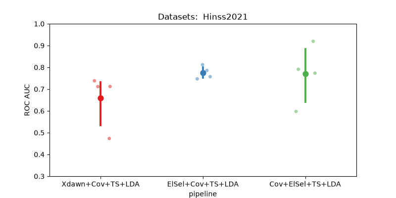

Note
Go to the end to download the full example code.
Hinss2021 classification example#
This example shows how to use the Hinss2021 dataset with the resting state paradigm.
In this example, we aim to determine the most effective channel selection strategy
for the moabb.datasets.Hinss2021 dataset.
The pipelines under consideration are:
Xdawn
Electrode selection based on time epochs data
Electrode selection based on covariance matrices
# License: BSD (3-clause)
import warnings
import numpy as np
import seaborn as sns
from matplotlib import pyplot as plt
from pyriemann.channelselection import ElectrodeSelection
from pyriemann.estimation import Covariances
from pyriemann.spatialfilters import Xdawn
from pyriemann.tangentspace import TangentSpace
from sklearn.base import BaseEstimator, TransformerMixin
from sklearn.discriminant_analysis import LinearDiscriminantAnalysis as LDA
from sklearn.pipeline import make_pipeline
from moabb import set_log_level
from moabb.datasets import Hinss2021
from moabb.evaluations import CrossSessionEvaluation
from moabb.paradigms import RestingStateToP300Adapter
# Suppressing future and runtime warnings for cleaner output
warnings.simplefilter(action="ignore", category=FutureWarning)
warnings.simplefilter(action="ignore", category=RuntimeWarning)
set_log_level("info")
Create util transformer#
Let’s create a scikit transformer mixin, that will select electrodes based on the covariance information
class EpochSelectChannel(TransformerMixin, BaseEstimator):
"""Select channels based on covariance information."""
def __init__(self, n_chan, cov_est):
self._chs_idx = None
self.n_chan = n_chan
self.cov_est = cov_est
def fit(self, X, _y=None):
# Get the covariances of the channels for each epoch.
covs = Covariances(estimator=self.cov_est).fit_transform(X)
# Get the average covariance between the channels
m = np.mean(covs, axis=0)
# Select the `n_chan` channels having the maximum covariances.
indices = np.unravel_index(
np.argpartition(m, -self.n_chan, axis=None)[-self.n_chan :], m.shape
)
# We will keep only these channels for the transform step.
self._chs_idx = np.unique(indices)
return self
def transform(self, X):
return X[:, self._chs_idx, :]
Initialization Process#
Define the experimental paradigm object (RestingState)
Load the datasets
Select a subset of subjects and specific events for analysis
# Here we define the mne events for the RestingState paradigm.
events = {"easy": 2, "diff": 3}
# The paradigm is adapted to the P300 paradigm.
paradigm = RestingStateToP300Adapter(events=events, tmin=0, tmax=0.5)
# We define a list with the dataset to use
datasets = [Hinss2021()]
# To reduce the computation time in the example, we will only use the
# first two subjects.
n__subjects = 2
title = "Datasets: "
for dataset in datasets:
title = title + " " + dataset.code
dataset.subject_list = dataset.subject_list[:n__subjects]
Create Pipelines#
Pipelines must be a dict of scikit-learning pipeline transformer.
pipelines = {}
pipelines["Xdawn+Cov+TS+LDA"] = make_pipeline(
Xdawn(nfilter=4), Covariances(estimator="lwf"), TangentSpace(), LDA()
)
pipelines["Cov+ElSel+TS+LDA"] = make_pipeline(
Covariances(estimator="lwf"), ElectrodeSelection(nelec=8), TangentSpace(), LDA()
)
# Pay attention here that the channel selection took place before computing the covariances:
# It is done on time epochs.
pipelines["ElSel+Cov+TS+LDA"] = make_pipeline(
EpochSelectChannel(n_chan=8, cov_est="lwf"),
Covariances(estimator="lwf"),
TangentSpace(),
LDA(),
)
Run evaluation#
Compare the pipeline using a cross session evaluation.
# Here should be cross-session
evaluation = CrossSessionEvaluation(paradigm=paradigm, datasets=datasets, overwrite=False)
results = evaluation.process(pipelines)
This is nemar-py 0.3.2.
Preparing to download nm000343 from https://data.nemar.org/
Retrieving 20 of 491 manifest files (16 concurrent downloads).
S3: 0%| | 0.00/193M [00:00<?, ?B/s]
S3: 1%| | 1.00M/193M [00:00<00:47, 4.25MB/s]
S3: 17%|█▋ | 32.7M/193M [00:00<00:01, 124MB/s]
S3: 49%|████▉ | 94.3M/193M [00:00<00:00, 301MB/s]
S3: 78%|███████▊ | 150M/193M [00:00<00:00, 390MB/s]
S3: 100%|██████████| 193M/193M [00:01<00:00, 169MB/s]
Overall: 0%| | 0.00/7.26k [00:00<?, ?B/s]
Overall: 16%|█▌ | 1.13k/7.26k [00:00<00:00, 8.50kB/s]
Overall: 47%|████▋ | 3.40k/7.26k [00:00<00:00, 15.8kB/s]
Finished downloading nm000343 v1.0.3.
0%| | 0.00/181M [00:00<?, ?B/s]
0%| | 12.3k/181M [00:00<32:54, 91.7kB/s]
0%| | 39.9k/181M [00:00<16:48, 180kB/s]
0%| | 82.9k/181M [00:00<10:59, 274kB/s]
0%| | 177k/181M [00:00<06:00, 502kB/s]
0%| | 229k/181M [00:00<06:04, 496kB/s]
0%| | 281k/181M [00:00<06:09, 489kB/s]
0%| | 355k/181M [00:00<05:26, 554kB/s]
0%| | 470k/181M [00:00<04:12, 714kB/s]
0%|▏ | 601k/181M [00:01<03:28, 866kB/s]
0%|▏ | 688k/181M [00:01<03:33, 845kB/s]
0%|▏ | 829k/181M [00:01<03:03, 984kB/s]
1%|▏ | 929k/181M [00:01<03:07, 963kB/s]
1%|▏ | 1.03M/181M [00:01<03:11, 942kB/s]
1%|▏ | 1.16M/181M [00:01<02:56, 1.02MB/s]
1%|▎ | 1.26M/181M [00:01<03:00, 995kB/s]
1%|▎ | 1.37M/181M [00:01<02:59, 999kB/s]
1%|▎ | 1.48M/181M [00:01<02:56, 1.02MB/s]
1%|▎ | 1.59M/181M [00:01<03:00, 993kB/s]
1%|▎ | 1.69M/181M [00:02<03:04, 972kB/s]
1%|▍ | 1.78M/181M [00:02<03:08, 950kB/s]
1%|▍ | 1.88M/181M [00:02<03:13, 928kB/s]
1%|▍ | 1.97M/181M [00:02<03:17, 908kB/s]
1%|▍ | 2.06M/181M [00:02<03:22, 885kB/s]
1%|▍ | 2.15M/181M [00:02<03:25, 872kB/s]
1%|▍ | 2.25M/181M [00:02<03:22, 882kB/s]
1%|▌ | 2.34M/181M [00:02<03:27, 863kB/s]
1%|▌ | 2.48M/181M [00:02<03:00, 989kB/s]
1%|▌ | 2.63M/181M [00:03<02:42, 1.10MB/s]
2%|▌ | 2.74M/181M [00:03<02:44, 1.09MB/s]
2%|▌ | 2.85M/181M [00:03<02:47, 1.06MB/s]
2%|▌ | 2.97M/181M [00:03<02:46, 1.07MB/s]
2%|▋ | 3.08M/181M [00:03<02:50, 1.05MB/s]
2%|▋ | 3.20M/181M [00:03<02:46, 1.07MB/s]
2%|▋ | 3.31M/181M [00:03<02:49, 1.05MB/s]
2%|▋ | 3.41M/181M [00:03<02:53, 1.02MB/s]
2%|▋ | 3.52M/181M [00:03<02:56, 1.00MB/s]
2%|▊ | 3.69M/181M [00:04<02:29, 1.19MB/s]
2%|▊ | 3.81M/181M [00:04<02:32, 1.16MB/s]
2%|▊ | 3.93M/181M [00:04<02:35, 1.14MB/s]
2%|▊ | 4.04M/181M [00:04<02:39, 1.11MB/s]
2%|▊ | 4.15M/181M [00:04<02:42, 1.09MB/s]
2%|▉ | 4.26M/181M [00:04<02:46, 1.06MB/s]
2%|▉ | 4.37M/181M [00:04<02:49, 1.04MB/s]
2%|▉ | 4.47M/181M [00:04<02:53, 1.02MB/s]
3%|▉ | 4.58M/181M [00:04<02:57, 996kB/s]
3%|█ | 4.68M/181M [00:05<03:00, 976kB/s]
3%|█ | 4.85M/181M [00:05<02:30, 1.17MB/s]
3%|█ | 4.97M/181M [00:05<02:34, 1.14MB/s]
3%|█ | 5.08M/181M [00:05<02:37, 1.11MB/s]
3%|█ | 5.20M/181M [00:05<02:41, 1.09MB/s]
3%|█ | 5.31M/181M [00:05<02:42, 1.08MB/s]
3%|█▏ | 5.42M/181M [00:05<02:46, 1.06MB/s]
3%|█▏ | 5.53M/181M [00:05<02:50, 1.03MB/s]
3%|█▏ | 5.77M/181M [00:05<02:05, 1.39MB/s]
3%|█▏ | 5.93M/181M [00:05<02:02, 1.43MB/s]
3%|█▎ | 6.08M/181M [00:06<02:05, 1.39MB/s]
3%|█▎ | 6.22M/181M [00:06<02:08, 1.36MB/s]
4%|█▎ | 6.35M/181M [00:06<02:50, 1.03MB/s]
4%|█▎ | 6.47M/181M [00:06<02:49, 1.03MB/s]
4%|█▍ | 6.58M/181M [00:06<02:49, 1.03MB/s]
4%|█▍ | 6.69M/181M [00:06<02:49, 1.03MB/s]
4%|█▍ | 6.80M/181M [00:06<02:51, 1.02MB/s]
4%|█▍ | 6.90M/181M [00:06<02:53, 1.00MB/s]
4%|█▌ | 7.00M/181M [00:07<02:56, 986kB/s]
4%|█▍ | 7.12M/181M [00:07<02:49, 1.03MB/s]
4%|█▌ | 7.27M/181M [00:07<02:34, 1.12MB/s]
4%|█▌ | 7.39M/181M [00:07<02:37, 1.10MB/s]
4%|█▌ | 7.50M/181M [00:07<02:41, 1.07MB/s]
4%|█▌ | 7.61M/181M [00:07<02:44, 1.05MB/s]
4%|█▌ | 7.71M/181M [00:07<02:48, 1.03MB/s]
4%|█▋ | 7.82M/181M [00:07<02:52, 1.01MB/s]
4%|█▋ | 7.92M/181M [00:07<02:55, 986kB/s]
4%|█▋ | 8.02M/181M [00:08<02:59, 965kB/s]
4%|█▋ | 8.11M/181M [00:08<03:02, 946kB/s]
5%|█▊ | 8.21M/181M [00:08<03:06, 926kB/s]
5%|█▊ | 8.34M/181M [00:08<02:53, 995kB/s]
5%|█▊ | 8.44M/181M [00:08<02:57, 973kB/s]
5%|█▊ | 8.56M/181M [00:08<02:46, 1.04MB/s]
5%|█▊ | 8.67M/181M [00:08<02:49, 1.02MB/s]
5%|█▉ | 8.77M/181M [00:08<02:53, 993kB/s]
5%|█▉ | 8.87M/181M [00:08<02:57, 970kB/s]
5%|█▉ | 8.97M/181M [00:09<03:01, 949kB/s]
5%|█▉ | 9.06M/181M [00:09<03:05, 928kB/s]
5%|█▉ | 9.16M/181M [00:09<03:09, 907kB/s]
5%|█▉ | 9.27M/181M [00:09<03:02, 940kB/s]
5%|██ | 9.38M/181M [00:09<02:55, 975kB/s]
5%|██ | 9.48M/181M [00:09<03:00, 952kB/s]
5%|██ | 9.61M/181M [00:09<02:46, 1.03MB/s]
5%|██ | 9.71M/181M [00:09<02:50, 1.01MB/s]
5%|██ | 9.86M/181M [00:09<02:36, 1.09MB/s]
6%|██ | 9.97M/181M [00:10<02:37, 1.08MB/s]
6%|██ | 10.1M/181M [00:10<02:32, 1.12MB/s]
6%|██▏ | 10.2M/181M [00:10<02:35, 1.10MB/s]
6%|██▏ | 10.3M/181M [00:10<02:38, 1.08MB/s]
6%|██▏ | 10.4M/181M [00:10<02:38, 1.08MB/s]
6%|██▏ | 10.6M/181M [00:10<02:32, 1.12MB/s]
6%|██▎ | 10.7M/181M [00:10<02:17, 1.24MB/s]
6%|██▎ | 10.9M/181M [00:10<02:20, 1.21MB/s]
6%|██▎ | 11.0M/181M [00:10<02:24, 1.18MB/s]
6%|██▎ | 11.1M/181M [00:10<02:23, 1.19MB/s]
6%|██▎ | 11.2M/181M [00:11<02:26, 1.16MB/s]
6%|██▍ | 11.4M/181M [00:11<02:30, 1.13MB/s]
6%|██▍ | 11.5M/181M [00:11<02:29, 1.14MB/s]
6%|██▍ | 11.6M/181M [00:11<02:32, 1.11MB/s]
6%|██▍ | 11.7M/181M [00:11<02:35, 1.09MB/s]
7%|██▍ | 11.8M/181M [00:11<02:39, 1.06MB/s]
7%|██▌ | 11.9M/181M [00:11<02:42, 1.04MB/s]
7%|██▌ | 12.0M/181M [00:11<02:46, 1.02MB/s]
7%|██▌ | 12.1M/181M [00:11<02:49, 995kB/s]
7%|██▋ | 12.2M/181M [00:12<02:52, 976kB/s]
7%|██▋ | 12.3M/181M [00:12<02:55, 964kB/s]
7%|██▌ | 12.5M/181M [00:12<02:29, 1.12MB/s]
7%|██▋ | 12.6M/181M [00:12<02:26, 1.15MB/s]
7%|██▋ | 12.7M/181M [00:12<02:29, 1.12MB/s]
7%|██▋ | 12.8M/181M [00:12<02:32, 1.10MB/s]
7%|██▋ | 13.0M/181M [00:12<02:35, 1.08MB/s]
7%|██▋ | 13.1M/181M [00:12<02:39, 1.06MB/s]
7%|██▊ | 13.2M/181M [00:12<02:42, 1.03MB/s]
7%|██▊ | 13.3M/181M [00:13<02:46, 1.01MB/s]
7%|██▉ | 13.4M/181M [00:13<02:49, 987kB/s]
7%|██▉ | 13.5M/181M [00:13<02:53, 967kB/s]
7%|██▉ | 13.6M/181M [00:13<02:56, 947kB/s]
8%|██▉ | 13.7M/181M [00:13<03:00, 927kB/s]
8%|██▉ | 13.8M/181M [00:13<02:47, 997kB/s]
8%|██▉ | 13.9M/181M [00:13<02:51, 976kB/s]
8%|███ | 14.0M/181M [00:13<02:48, 993kB/s]
8%|██▉ | 14.1M/181M [00:13<02:45, 1.01MB/s]
8%|██▉ | 14.3M/181M [00:14<02:35, 1.07MB/s]
8%|███ | 14.4M/181M [00:14<02:39, 1.05MB/s]
8%|███ | 14.5M/181M [00:14<02:35, 1.07MB/s]
8%|███ | 14.6M/181M [00:14<02:39, 1.04MB/s]
8%|███ | 14.7M/181M [00:14<02:42, 1.02MB/s]
8%|███ | 14.8M/181M [00:14<02:46, 1.00MB/s]
8%|███▏ | 14.9M/181M [00:14<02:49, 978kB/s]
8%|███▏ | 15.0M/181M [00:14<02:54, 949kB/s]
8%|███▎ | 15.1M/181M [00:14<02:58, 929kB/s]
8%|███▎ | 15.2M/181M [00:15<03:02, 908kB/s]
8%|███▎ | 15.3M/181M [00:15<03:01, 911kB/s]
9%|███▏ | 15.5M/181M [00:15<02:25, 1.14MB/s]
9%|███▎ | 15.6M/181M [00:15<02:29, 1.11MB/s]
9%|███▎ | 15.7M/181M [00:15<02:24, 1.14MB/s]
9%|███▎ | 15.8M/181M [00:15<02:28, 1.12MB/s]
9%|███▎ | 15.9M/181M [00:15<02:31, 1.09MB/s]
9%|███▎ | 16.0M/181M [00:15<02:34, 1.07MB/s]
9%|███▍ | 16.2M/181M [00:15<02:37, 1.04MB/s]
9%|███▍ | 16.3M/181M [00:15<02:38, 1.04MB/s]
9%|███▍ | 16.4M/181M [00:16<02:19, 1.18MB/s]
9%|███▍ | 16.5M/181M [00:16<02:22, 1.15MB/s]
9%|███▍ | 16.7M/181M [00:16<02:25, 1.13MB/s]
9%|███▌ | 16.8M/181M [00:16<02:28, 1.10MB/s]
9%|███▌ | 16.9M/181M [00:16<02:32, 1.08MB/s]
9%|███▌ | 17.0M/181M [00:16<02:35, 1.06MB/s]
9%|███▌ | 17.1M/181M [00:16<02:38, 1.03MB/s]
10%|███▌ | 17.2M/181M [00:16<02:41, 1.01MB/s]
10%|███▋ | 17.3M/181M [00:16<02:44, 993kB/s]
10%|███▊ | 17.4M/181M [00:17<02:48, 970kB/s]
10%|███▊ | 17.5M/181M [00:17<02:52, 950kB/s]
10%|███▊ | 17.6M/181M [00:17<02:56, 928kB/s]
10%|███▊ | 17.7M/181M [00:17<02:59, 908kB/s]
10%|███▊ | 17.8M/181M [00:17<03:03, 889kB/s]
10%|███▊ | 17.9M/181M [00:17<02:38, 1.03MB/s]
10%|███▊ | 18.0M/181M [00:17<02:36, 1.04MB/s]
10%|███▊ | 18.2M/181M [00:17<02:29, 1.09MB/s]
10%|███▊ | 18.3M/181M [00:17<02:32, 1.06MB/s]
10%|███▊ | 18.4M/181M [00:18<02:36, 1.04MB/s]
10%|███▉ | 18.5M/181M [00:18<02:39, 1.02MB/s]
10%|███▉ | 18.6M/181M [00:18<02:41, 1.00MB/s]
10%|████ | 18.7M/181M [00:18<02:45, 984kB/s]
10%|████ | 18.8M/181M [00:18<02:48, 963kB/s]
10%|████ | 18.9M/181M [00:18<02:45, 978kB/s]
11%|████ | 19.0M/181M [00:18<02:49, 958kB/s]
11%|████ | 19.2M/181M [00:18<02:18, 1.17MB/s]
11%|████ | 19.3M/181M [00:18<02:21, 1.14MB/s]
11%|████ | 19.4M/181M [00:19<02:24, 1.12MB/s]
11%|████ | 19.5M/181M [00:19<02:28, 1.09MB/s]
11%|████ | 19.6M/181M [00:19<02:31, 1.07MB/s]
11%|████▏ | 19.8M/181M [00:19<02:34, 1.04MB/s]
11%|████▏ | 19.9M/181M [00:19<02:37, 1.02MB/s]
11%|████▏ | 20.0M/181M [00:19<02:40, 1.00MB/s]
11%|████▎ | 20.1M/181M [00:19<02:44, 979kB/s]
11%|████▏ | 20.2M/181M [00:19<02:16, 1.18MB/s]
11%|████▎ | 20.4M/181M [00:19<02:15, 1.18MB/s]
11%|████▎ | 20.5M/181M [00:19<02:18, 1.16MB/s]
11%|████▎ | 20.7M/181M [00:20<01:48, 1.48MB/s]
12%|████▍ | 20.9M/181M [00:20<01:50, 1.44MB/s]
12%|████▍ | 21.0M/181M [00:20<01:53, 1.41MB/s]
12%|████▍ | 21.2M/181M [00:20<01:56, 1.38MB/s]
12%|████▍ | 21.3M/181M [00:20<01:58, 1.35MB/s]
12%|████▌ | 21.4M/181M [00:20<02:01, 1.32MB/s]
12%|████▌ | 21.6M/181M [00:20<02:03, 1.29MB/s]
12%|████▋ | 21.7M/181M [00:20<02:44, 970kB/s]
12%|████▋ | 21.8M/181M [00:21<02:42, 979kB/s]
12%|████▋ | 21.9M/181M [00:21<02:42, 979kB/s]
12%|████▋ | 22.0M/181M [00:21<02:42, 976kB/s]
12%|████▊ | 22.1M/181M [00:21<02:44, 968kB/s]
12%|████▊ | 22.2M/181M [00:21<02:46, 956kB/s]
12%|████▊ | 22.3M/181M [00:21<02:48, 942kB/s]
12%|████▊ | 22.4M/181M [00:21<02:51, 927kB/s]
12%|████▊ | 22.5M/181M [00:21<02:54, 910kB/s]
13%|████▊ | 22.7M/181M [00:21<02:19, 1.14MB/s]
13%|████▊ | 22.8M/181M [00:22<02:22, 1.11MB/s]
13%|████▊ | 22.9M/181M [00:22<02:25, 1.09MB/s]
13%|████▊ | 23.0M/181M [00:22<02:28, 1.06MB/s]
13%|████▊ | 23.2M/181M [00:22<02:20, 1.13MB/s]
13%|████▉ | 23.3M/181M [00:22<02:23, 1.10MB/s]
13%|████▉ | 23.4M/181M [00:22<02:26, 1.08MB/s]
13%|████▉ | 23.5M/181M [00:22<02:29, 1.05MB/s]
13%|████▉ | 23.6M/181M [00:22<02:25, 1.08MB/s]
13%|████▉ | 23.7M/181M [00:22<02:28, 1.06MB/s]
13%|█████ | 23.9M/181M [00:23<02:20, 1.12MB/s]
13%|█████ | 24.0M/181M [00:23<02:24, 1.09MB/s]
13%|█████ | 24.1M/181M [00:23<02:27, 1.07MB/s]
13%|█████ | 24.2M/181M [00:23<02:30, 1.04MB/s]
13%|█████ | 24.3M/181M [00:23<02:33, 1.02MB/s]
13%|█████▎ | 24.4M/181M [00:23<02:36, 998kB/s]
14%|█████▎ | 24.5M/181M [00:23<02:40, 976kB/s]
14%|█████▎ | 24.6M/181M [00:23<02:43, 956kB/s]
14%|█████▎ | 24.7M/181M [00:23<02:38, 986kB/s]
14%|█████▏ | 24.9M/181M [00:24<02:16, 1.14MB/s]
14%|█████▎ | 25.1M/181M [00:24<02:00, 1.29MB/s]
14%|█████▎ | 25.2M/181M [00:24<01:54, 1.36MB/s]
14%|█████▎ | 25.4M/181M [00:24<01:51, 1.40MB/s]
14%|█████▎ | 25.5M/181M [00:24<01:53, 1.37MB/s]
14%|█████▍ | 25.7M/181M [00:24<01:56, 1.33MB/s]
14%|█████▍ | 25.8M/181M [00:24<01:55, 1.34MB/s]
14%|█████▍ | 26.0M/181M [00:24<01:58, 1.31MB/s]
14%|█████▍ | 26.1M/181M [00:24<02:00, 1.28MB/s]
14%|█████▌ | 26.2M/181M [00:24<02:03, 1.26MB/s]
15%|█████▌ | 26.3M/181M [00:25<02:06, 1.23MB/s]
15%|█████▋ | 26.5M/181M [00:25<02:47, 924kB/s]
15%|█████▋ | 26.6M/181M [00:25<02:46, 930kB/s]
15%|█████▌ | 26.7M/181M [00:25<02:27, 1.05MB/s]
15%|█████▋ | 26.9M/181M [00:25<02:06, 1.21MB/s]
15%|█████▋ | 27.1M/181M [00:25<01:42, 1.51MB/s]
15%|█████▋ | 27.3M/181M [00:25<01:36, 1.59MB/s]
15%|█████▊ | 27.6M/181M [00:25<01:26, 1.78MB/s]
15%|█████▊ | 27.8M/181M [00:26<01:27, 1.75MB/s]
15%|█████▊ | 27.9M/181M [00:26<01:54, 1.33MB/s]
16%|█████▉ | 28.1M/181M [00:26<01:51, 1.37MB/s]
16%|█████▉ | 28.3M/181M [00:26<01:48, 1.40MB/s]
16%|█████▉ | 28.4M/181M [00:26<01:49, 1.39MB/s]
16%|██████ | 28.6M/181M [00:26<01:35, 1.59MB/s]
16%|██████ | 28.8M/181M [00:26<01:36, 1.57MB/s]
16%|██████ | 29.0M/181M [00:26<01:38, 1.55MB/s]
16%|██████ | 29.1M/181M [00:27<01:39, 1.52MB/s]
16%|██████▏ | 29.3M/181M [00:27<02:11, 1.15MB/s]
16%|██████▏ | 29.4M/181M [00:27<02:10, 1.17MB/s]
16%|██████▏ | 29.6M/181M [00:27<02:01, 1.25MB/s]
16%|██████▏ | 29.7M/181M [00:27<02:01, 1.25MB/s]
16%|██████▎ | 29.8M/181M [00:27<02:02, 1.24MB/s]
17%|██████▎ | 30.0M/181M [00:27<02:04, 1.21MB/s]
17%|██████▎ | 30.1M/181M [00:27<02:00, 1.25MB/s]
17%|██████▎ | 30.2M/181M [00:28<02:02, 1.23MB/s]
17%|██████▎ | 30.4M/181M [00:28<02:04, 1.21MB/s]
17%|██████▍ | 30.6M/181M [00:28<01:46, 1.41MB/s]
17%|██████▍ | 30.8M/181M [00:28<01:32, 1.62MB/s]
17%|██████▌ | 31.0M/181M [00:28<01:34, 1.58MB/s]
17%|██████▌ | 31.1M/181M [00:28<01:36, 1.56MB/s]
17%|██████▌ | 31.3M/181M [00:28<01:38, 1.52MB/s]
17%|██████▌ | 31.4M/181M [00:28<01:40, 1.49MB/s]
17%|██████▋ | 31.6M/181M [00:28<01:42, 1.45MB/s]
18%|██████▋ | 31.7M/181M [00:29<01:44, 1.42MB/s]
18%|██████▋ | 31.9M/181M [00:29<02:18, 1.07MB/s]
18%|██████▋ | 32.0M/181M [00:29<02:17, 1.08MB/s]
18%|██████▋ | 32.1M/181M [00:29<02:17, 1.08MB/s]
18%|██████▊ | 32.2M/181M [00:29<02:18, 1.08MB/s]
18%|██████▊ | 32.3M/181M [00:29<02:19, 1.07MB/s]
18%|██████▊ | 32.5M/181M [00:29<02:15, 1.10MB/s]
18%|██████▊ | 32.6M/181M [00:29<02:16, 1.09MB/s]
18%|██████▊ | 32.7M/181M [00:29<02:19, 1.07MB/s]
18%|██████▉ | 32.8M/181M [00:30<02:21, 1.05MB/s]
18%|██████▉ | 32.9M/181M [00:30<02:24, 1.03MB/s]
18%|██████▉ | 33.0M/181M [00:30<02:27, 1.00MB/s]
18%|███████▏ | 33.1M/181M [00:30<02:30, 984kB/s]
18%|██████▉ | 33.3M/181M [00:30<02:16, 1.08MB/s]
19%|███████ | 33.5M/181M [00:30<01:43, 1.43MB/s]
19%|███████ | 33.7M/181M [00:30<01:41, 1.45MB/s]
19%|███████ | 33.9M/181M [00:30<01:26, 1.69MB/s]
19%|███████▏ | 34.1M/181M [00:30<01:28, 1.66MB/s]
19%|███████▏ | 34.2M/181M [00:31<01:30, 1.62MB/s]
19%|███████▏ | 34.4M/181M [00:31<01:32, 1.58MB/s]
19%|███████▎ | 34.6M/181M [00:31<01:34, 1.54MB/s]
19%|███████▎ | 34.7M/181M [00:31<01:37, 1.51MB/s]
19%|███████▎ | 34.9M/181M [00:31<01:38, 1.48MB/s]
19%|███████▎ | 35.0M/181M [00:31<01:40, 1.45MB/s]
19%|███████▍ | 35.3M/181M [00:31<01:28, 1.64MB/s]
20%|███████▍ | 35.5M/181M [00:31<01:21, 1.79MB/s]
20%|███████▍ | 35.7M/181M [00:32<01:48, 1.35MB/s]
20%|███████▌ | 35.8M/181M [00:32<01:47, 1.35MB/s]
20%|███████▌ | 36.0M/181M [00:32<01:47, 1.35MB/s]
20%|███████▌ | 36.1M/181M [00:32<02:17, 1.06MB/s]
20%|███████▌ | 36.2M/181M [00:32<02:15, 1.07MB/s]
20%|███████▋ | 36.3M/181M [00:32<02:14, 1.07MB/s]
20%|███████▋ | 36.5M/181M [00:32<02:15, 1.07MB/s]
20%|███████▋ | 36.6M/181M [00:32<02:16, 1.06MB/s]
20%|███████▋ | 36.7M/181M [00:33<02:17, 1.05MB/s]
20%|███████▋ | 36.8M/181M [00:33<02:19, 1.03MB/s]
20%|███████▋ | 36.9M/181M [00:33<02:22, 1.01MB/s]
20%|███████▉ | 37.0M/181M [00:33<02:25, 990kB/s]
20%|███████▉ | 37.1M/181M [00:33<02:28, 969kB/s]
21%|████████ | 37.2M/181M [00:33<02:31, 949kB/s]
21%|████████ | 37.3M/181M [00:33<02:30, 957kB/s]
21%|████████ | 37.4M/181M [00:33<02:32, 943kB/s]
21%|███████▉ | 37.5M/181M [00:33<02:20, 1.02MB/s]
21%|████████ | 37.6M/181M [00:33<02:23, 997kB/s]
21%|███████▉ | 37.8M/181M [00:34<02:06, 1.14MB/s]
21%|███████▉ | 37.9M/181M [00:34<02:08, 1.11MB/s]
21%|███████▉ | 38.0M/181M [00:34<02:11, 1.09MB/s]
21%|████████ | 38.1M/181M [00:34<02:14, 1.06MB/s]
21%|████████ | 38.3M/181M [00:34<02:06, 1.13MB/s]
21%|████████ | 38.4M/181M [00:34<01:54, 1.24MB/s]
21%|████████ | 38.6M/181M [00:34<01:51, 1.27MB/s]
21%|████████ | 38.7M/181M [00:34<01:53, 1.25MB/s]
21%|████████▏ | 38.8M/181M [00:34<01:55, 1.24MB/s]
22%|████████▏ | 39.0M/181M [00:35<01:57, 1.21MB/s]
22%|████████▏ | 39.1M/181M [00:35<02:00, 1.18MB/s]
22%|████████▎ | 39.3M/181M [00:35<01:31, 1.55MB/s]
22%|████████▎ | 39.6M/181M [00:35<01:20, 1.76MB/s]
22%|████████▎ | 39.8M/181M [00:35<01:22, 1.72MB/s]
22%|████████▍ | 39.9M/181M [00:35<01:24, 1.68MB/s]
22%|████████▍ | 40.1M/181M [00:35<01:26, 1.63MB/s]
22%|████████▍ | 40.3M/181M [00:35<01:28, 1.59MB/s]
22%|████████▌ | 40.5M/181M [00:35<01:19, 1.77MB/s]
22%|████████▌ | 40.7M/181M [00:36<01:20, 1.74MB/s]
23%|████████▌ | 40.9M/181M [00:36<01:17, 1.80MB/s]
23%|████████▌ | 41.1M/181M [00:36<01:19, 1.76MB/s]
23%|████████▋ | 41.2M/181M [00:36<01:21, 1.71MB/s]
23%|████████▋ | 41.4M/181M [00:36<01:48, 1.29MB/s]
23%|████████▋ | 41.6M/181M [00:36<01:47, 1.30MB/s]
23%|████████▊ | 41.7M/181M [00:36<01:47, 1.30MB/s]
23%|████████▊ | 41.9M/181M [00:36<01:38, 1.41MB/s]
23%|████████▊ | 42.0M/181M [00:37<01:39, 1.39MB/s]
23%|████████▊ | 42.2M/181M [00:37<01:40, 1.38MB/s]
23%|████████▉ | 42.3M/181M [00:37<01:42, 1.35MB/s]
23%|████████▉ | 42.5M/181M [00:37<02:14, 1.03MB/s]
24%|████████▉ | 42.6M/181M [00:37<02:13, 1.04MB/s]
24%|████████▉ | 42.7M/181M [00:37<02:03, 1.12MB/s]
24%|████████▉ | 42.8M/181M [00:37<02:03, 1.12MB/s]
24%|█████████ | 43.0M/181M [00:37<02:04, 1.11MB/s]
24%|█████████ | 43.1M/181M [00:38<01:55, 1.20MB/s]
24%|█████████ | 43.3M/181M [00:38<01:46, 1.29MB/s]
24%|█████████ | 43.4M/181M [00:38<01:48, 1.27MB/s]
24%|█████████▏ | 43.5M/181M [00:38<01:50, 1.24MB/s]
24%|█████████▏ | 43.7M/181M [00:38<01:52, 1.22MB/s]
24%|█████████▏ | 43.8M/181M [00:38<01:54, 1.19MB/s]
24%|█████████▍ | 43.9M/181M [00:38<02:31, 904kB/s]
24%|█████████▍ | 44.0M/181M [00:38<02:30, 912kB/s]
25%|█████████▎ | 44.4M/181M [00:38<01:30, 1.51MB/s]
25%|█████████▎ | 44.5M/181M [00:39<01:30, 1.51MB/s]
25%|█████████▍ | 44.7M/181M [00:39<01:30, 1.50MB/s]
25%|█████████▍ | 44.8M/181M [00:39<01:57, 1.16MB/s]
25%|█████████▍ | 45.0M/181M [00:39<01:55, 1.17MB/s]
25%|█████████▍ | 45.2M/181M [00:39<01:38, 1.38MB/s]
25%|█████████▌ | 45.3M/181M [00:39<01:38, 1.38MB/s]
25%|█████████▌ | 45.5M/181M [00:39<01:38, 1.37MB/s]
25%|█████████▌ | 45.7M/181M [00:39<01:36, 1.41MB/s]
25%|█████████▌ | 45.8M/181M [00:40<01:31, 1.48MB/s]
25%|█████████▋ | 46.0M/181M [00:40<01:32, 1.45MB/s]
25%|█████████▋ | 46.1M/181M [00:40<01:34, 1.43MB/s]
26%|█████████▋ | 46.3M/181M [00:40<01:36, 1.40MB/s]
26%|█████████▋ | 46.4M/181M [00:40<01:38, 1.37MB/s]
26%|█████████▊ | 46.6M/181M [00:40<01:40, 1.34MB/s]
26%|█████████▊ | 46.7M/181M [00:40<01:42, 1.32MB/s]
26%|█████████▊ | 46.8M/181M [00:40<01:44, 1.29MB/s]
26%|█████████▊ | 47.0M/181M [00:40<01:44, 1.28MB/s]
26%|█████████▉ | 47.2M/181M [00:41<01:30, 1.49MB/s]
26%|█████████▉ | 47.3M/181M [00:41<01:29, 1.49MB/s]
26%|█████████▉ | 47.5M/181M [00:41<01:31, 1.45MB/s]
26%|█████████▉ | 47.6M/181M [00:41<01:33, 1.42MB/s]
26%|██████████ | 47.8M/181M [00:41<01:29, 1.49MB/s]
26%|██████████ | 48.0M/181M [00:41<01:28, 1.50MB/s]
27%|██████████ | 48.1M/181M [00:41<01:30, 1.46MB/s]
27%|██████████▏ | 48.3M/181M [00:41<01:32, 1.43MB/s]
27%|██████████▏ | 48.4M/181M [00:41<01:28, 1.49MB/s]
27%|██████████▏ | 48.7M/181M [00:42<01:18, 1.68MB/s]
27%|██████████▎ | 48.8M/181M [00:42<01:20, 1.64MB/s]
27%|██████████▎ | 49.0M/181M [00:42<01:22, 1.60MB/s]
27%|██████████▎ | 49.2M/181M [00:42<01:24, 1.56MB/s]
27%|██████████▎ | 49.3M/181M [00:42<01:26, 1.53MB/s]
27%|██████████▍ | 49.5M/181M [00:42<01:23, 1.58MB/s]
27%|██████████▍ | 49.7M/181M [00:42<01:17, 1.69MB/s]
28%|██████████▍ | 49.9M/181M [00:42<01:19, 1.65MB/s]
28%|██████████▌ | 50.1M/181M [00:42<01:21, 1.61MB/s]
28%|██████████▌ | 50.2M/181M [00:43<01:22, 1.58MB/s]
28%|██████████▌ | 50.4M/181M [00:43<01:24, 1.54MB/s]
28%|██████████▌ | 50.5M/181M [00:43<01:52, 1.16MB/s]
28%|██████████▋ | 50.7M/181M [00:43<01:51, 1.17MB/s]
28%|██████████▋ | 50.8M/181M [00:43<01:51, 1.17MB/s]
28%|██████████▋ | 50.9M/181M [00:43<01:51, 1.16MB/s]
28%|██████████▋ | 51.0M/181M [00:43<01:50, 1.18MB/s]
28%|██████████▊ | 51.3M/181M [00:43<01:27, 1.49MB/s]
28%|██████████▊ | 51.5M/181M [00:43<01:26, 1.49MB/s]
29%|██████████▊ | 51.7M/181M [00:44<01:13, 1.76MB/s]
29%|██████████▉ | 51.9M/181M [00:44<01:14, 1.73MB/s]
29%|██████████▉ | 52.1M/181M [00:44<01:16, 1.69MB/s]
29%|██████████▉ | 52.2M/181M [00:44<01:17, 1.66MB/s]
29%|███████████ | 52.4M/181M [00:44<01:19, 1.62MB/s]
29%|███████████ | 52.6M/181M [00:44<01:20, 1.59MB/s]
29%|███████████ | 52.7M/181M [00:44<01:22, 1.55MB/s]
29%|███████████ | 52.9M/181M [00:44<01:24, 1.52MB/s]
29%|███████████▏ | 53.0M/181M [00:44<01:26, 1.48MB/s]
29%|███████████▏ | 53.2M/181M [00:45<01:27, 1.45MB/s]
29%|███████████▏ | 53.3M/181M [00:45<01:29, 1.42MB/s]
30%|███████████▏ | 53.5M/181M [00:45<01:31, 1.39MB/s]
30%|███████████▎ | 53.6M/181M [00:45<01:33, 1.36MB/s]
30%|███████████▎ | 53.8M/181M [00:45<01:25, 1.49MB/s]
30%|███████████▎ | 54.0M/181M [00:45<01:27, 1.45MB/s]
30%|███████████▎ | 54.1M/181M [00:45<01:29, 1.42MB/s]
30%|███████████▍ | 54.2M/181M [00:45<01:31, 1.39MB/s]
30%|███████████▍ | 54.4M/181M [00:45<01:33, 1.36MB/s]
30%|███████████▍ | 54.6M/181M [00:46<01:25, 1.48MB/s]
30%|███████████▍ | 54.7M/181M [00:46<01:27, 1.45MB/s]
30%|███████████▌ | 54.9M/181M [00:46<01:29, 1.41MB/s]
30%|███████████▌ | 55.0M/181M [00:46<01:31, 1.38MB/s]
30%|███████████▌ | 55.2M/181M [00:46<01:27, 1.44MB/s]
31%|███████████▌ | 55.3M/181M [00:46<01:29, 1.40MB/s]
31%|███████████▋ | 55.5M/181M [00:46<01:31, 1.37MB/s]
31%|███████████▋ | 55.7M/181M [00:46<01:19, 1.58MB/s]
31%|███████████▋ | 56.0M/181M [00:46<01:08, 1.82MB/s]
31%|███████████▊ | 56.2M/181M [00:47<01:08, 1.82MB/s]
31%|███████████▊ | 56.3M/181M [00:47<01:10, 1.77MB/s]
31%|███████████▊ | 56.6M/181M [00:47<01:06, 1.87MB/s]
31%|███████████▉ | 56.7M/181M [00:47<01:08, 1.82MB/s]
31%|███████████▉ | 56.9M/181M [00:47<01:09, 1.78MB/s]
32%|███████████▉ | 57.1M/181M [00:47<01:32, 1.34MB/s]
32%|████████████ | 57.3M/181M [00:47<01:31, 1.35MB/s]
32%|████████████ | 57.4M/181M [00:47<01:30, 1.36MB/s]
32%|████████████ | 57.6M/181M [00:47<01:31, 1.35MB/s]
32%|████████████▏ | 57.9M/181M [00:48<01:07, 1.82MB/s]
32%|████████████▏ | 58.1M/181M [00:48<01:08, 1.80MB/s]
32%|████████████▏ | 58.3M/181M [00:48<01:09, 1.77MB/s]
32%|████████████▎ | 58.4M/181M [00:48<01:10, 1.74MB/s]
32%|████████████▎ | 58.8M/181M [00:48<00:53, 2.30MB/s]
33%|████████████▍ | 59.1M/181M [00:48<01:10, 1.74MB/s]
33%|████████████▍ | 59.3M/181M [00:48<01:09, 1.76MB/s]
33%|████████████▍ | 59.5M/181M [00:48<01:09, 1.76MB/s]
33%|████████████▌ | 59.6M/181M [00:49<01:28, 1.38MB/s]
33%|████████████▌ | 59.8M/181M [00:49<01:24, 1.43MB/s]
33%|████████████▌ | 60.0M/181M [00:49<01:23, 1.45MB/s]
33%|████████████▋ | 60.2M/181M [00:49<01:18, 1.54MB/s]
33%|████████████▋ | 60.3M/181M [00:49<01:18, 1.53MB/s]
33%|████████████▋ | 60.5M/181M [00:49<01:19, 1.52MB/s]
34%|████████████▋ | 60.7M/181M [00:49<01:43, 1.16MB/s]
34%|████████████▊ | 60.8M/181M [00:50<01:37, 1.24MB/s]
34%|████████████▊ | 61.0M/181M [00:50<01:32, 1.30MB/s]
34%|████████████▊ | 61.1M/181M [00:50<01:32, 1.30MB/s]
34%|████████████▊ | 61.3M/181M [00:50<01:32, 1.29MB/s]
34%|████████████▉ | 61.4M/181M [00:50<01:33, 1.28MB/s]
34%|████████████▉ | 61.5M/181M [00:50<01:35, 1.26MB/s]
34%|█████████████▎ | 61.6M/181M [00:50<02:04, 957kB/s]
34%|█████████████▎ | 61.8M/181M [00:50<02:03, 965kB/s]
34%|████████████▉ | 61.9M/181M [00:51<01:45, 1.12MB/s]
34%|█████████████ | 62.2M/181M [00:51<01:12, 1.63MB/s]
34%|█████████████ | 62.4M/181M [00:51<01:12, 1.63MB/s]
35%|█████████████▏ | 62.6M/181M [00:51<01:13, 1.61MB/s]
35%|█████████████▏ | 62.8M/181M [00:51<01:14, 1.59MB/s]
35%|█████████████▏ | 62.9M/181M [00:51<01:37, 1.21MB/s]
35%|█████████████▏ | 63.1M/181M [00:51<01:36, 1.23MB/s]
35%|█████████████▎ | 63.2M/181M [00:51<01:35, 1.23MB/s]
35%|█████████████▋ | 63.3M/181M [00:52<02:02, 965kB/s]
35%|█████████████▋ | 63.4M/181M [00:52<02:00, 975kB/s]
35%|█████████████▋ | 63.5M/181M [00:52<01:59, 980kB/s]
35%|█████████████▋ | 63.6M/181M [00:52<01:59, 979kB/s]
35%|█████████████▍ | 63.8M/181M [00:52<01:43, 1.14MB/s]
35%|█████████████▍ | 64.1M/181M [00:52<01:10, 1.66MB/s]
36%|█████████████▌ | 64.3M/181M [00:52<01:31, 1.28MB/s]
36%|█████████████▌ | 64.5M/181M [00:52<01:30, 1.29MB/s]
36%|█████████████▌ | 64.6M/181M [00:53<01:27, 1.33MB/s]
36%|█████████████▌ | 64.8M/181M [00:53<01:27, 1.33MB/s]
36%|█████████████▌ | 64.9M/181M [00:53<01:28, 1.32MB/s]
36%|█████████████▋ | 65.1M/181M [00:53<01:15, 1.53MB/s]
36%|█████████████▋ | 65.3M/181M [00:53<01:13, 1.56MB/s]
36%|█████████████▋ | 65.5M/181M [00:53<01:15, 1.54MB/s]
36%|█████████████▊ | 65.6M/181M [00:53<01:16, 1.51MB/s]
36%|█████████████▊ | 65.8M/181M [00:53<01:17, 1.48MB/s]
36%|█████████████▊ | 65.9M/181M [00:53<01:18, 1.46MB/s]
37%|█████████████▉ | 66.2M/181M [00:54<01:09, 1.65MB/s]
37%|█████████████▉ | 66.3M/181M [00:54<01:10, 1.62MB/s]
37%|█████████████▉ | 66.5M/181M [00:54<01:33, 1.22MB/s]
37%|██████████████ | 66.7M/181M [00:54<01:21, 1.40MB/s]
37%|██████████████ | 66.9M/181M [00:54<01:17, 1.47MB/s]
37%|██████████████ | 67.0M/181M [00:54<01:18, 1.46MB/s]
37%|██████████████ | 67.2M/181M [00:54<01:18, 1.45MB/s]
37%|██████████████▏ | 67.3M/181M [00:54<01:19, 1.43MB/s]
37%|██████████████▏ | 67.5M/181M [00:55<01:20, 1.41MB/s]
37%|██████████████▏ | 67.6M/181M [00:55<01:21, 1.39MB/s]
37%|██████████████▏ | 67.8M/181M [00:55<01:12, 1.56MB/s]
38%|██████████████▎ | 68.0M/181M [00:55<01:13, 1.54MB/s]
38%|██████████████▎ | 68.2M/181M [00:55<01:14, 1.51MB/s]
38%|██████████████▎ | 68.3M/181M [00:55<01:16, 1.48MB/s]
38%|██████████████▎ | 68.5M/181M [00:55<01:17, 1.45MB/s]
38%|██████████████▍ | 68.6M/181M [00:55<01:16, 1.47MB/s]
38%|██████████████▍ | 68.8M/181M [00:55<01:18, 1.43MB/s]
38%|██████████████▍ | 68.9M/181M [00:56<01:19, 1.40MB/s]
38%|██████████████▍ | 69.1M/181M [00:56<01:21, 1.37MB/s]
38%|██████████████▌ | 69.2M/181M [00:56<01:47, 1.04MB/s]
38%|██████████████▉ | 69.3M/181M [00:56<02:13, 838kB/s]
38%|██████████████▉ | 69.4M/181M [00:56<02:11, 852kB/s]
38%|██████████████▉ | 69.5M/181M [00:56<02:03, 902kB/s]
38%|██████████████▌ | 69.7M/181M [00:56<01:49, 1.02MB/s]
39%|██████████████▋ | 69.8M/181M [00:56<01:49, 1.02MB/s]
39%|██████████████▋ | 69.9M/181M [00:57<01:42, 1.08MB/s]
39%|██████████████▋ | 70.0M/181M [00:57<01:43, 1.07MB/s]
39%|██████████████▋ | 70.1M/181M [00:57<01:45, 1.06MB/s]
39%|██████████████▋ | 70.3M/181M [00:57<01:46, 1.04MB/s]
39%|██████████████▊ | 70.4M/181M [00:57<01:48, 1.02MB/s]
39%|██████████████▊ | 70.5M/181M [00:57<01:50, 1.00MB/s]
39%|██████████████▊ | 70.7M/181M [00:57<01:15, 1.46MB/s]
39%|██████████████▉ | 70.9M/181M [00:57<01:08, 1.61MB/s]
39%|██████████████▉ | 71.1M/181M [00:57<01:05, 1.67MB/s]
39%|██████████████▉ | 71.3M/181M [00:58<01:07, 1.63MB/s]
39%|███████████████ | 71.5M/181M [00:58<01:08, 1.59MB/s]
40%|███████████████ | 71.6M/181M [00:58<01:31, 1.20MB/s]
40%|███████████████▍ | 71.8M/181M [00:58<01:52, 971kB/s]
40%|███████████████ | 72.0M/181M [00:58<01:34, 1.15MB/s]
40%|███████████████▏ | 72.1M/181M [00:58<01:33, 1.16MB/s]
40%|███████████████▏ | 72.3M/181M [00:58<01:15, 1.44MB/s]
40%|███████████████▏ | 72.5M/181M [00:59<01:15, 1.45MB/s]
40%|███████████████▎ | 72.7M/181M [00:59<01:09, 1.56MB/s]
40%|███████████████▎ | 72.9M/181M [00:59<01:10, 1.54MB/s]
40%|███████████████▎ | 73.0M/181M [00:59<01:31, 1.18MB/s]
40%|███████████████▎ | 73.2M/181M [00:59<01:30, 1.20MB/s]
40%|███████████████▍ | 73.3M/181M [00:59<01:29, 1.20MB/s]
41%|███████████████▍ | 73.4M/181M [00:59<01:30, 1.19MB/s]
41%|███████████████▍ | 73.5M/181M [00:59<01:30, 1.18MB/s]
41%|███████████████▌ | 73.9M/181M [01:00<00:59, 1.81MB/s]
41%|███████████████▌ | 74.1M/181M [01:00<00:59, 1.79MB/s]
41%|███████████████▌ | 74.3M/181M [01:00<01:00, 1.75MB/s]
41%|███████████████▋ | 74.5M/181M [01:00<01:01, 1.72MB/s]
41%|███████████████▋ | 74.6M/181M [01:00<01:02, 1.69MB/s]
41%|███████████████▋ | 74.8M/181M [01:00<01:04, 1.66MB/s]
41%|███████████████▋ | 75.0M/181M [01:00<01:05, 1.62MB/s]
42%|███████████████▊ | 75.2M/181M [01:00<01:01, 1.72MB/s]
42%|███████████████▊ | 75.4M/181M [01:00<01:02, 1.68MB/s]
42%|███████████████▊ | 75.5M/181M [01:01<01:04, 1.64MB/s]
42%|███████████████▉ | 75.7M/181M [01:01<01:05, 1.60MB/s]
42%|███████████████▉ | 75.9M/181M [01:01<01:07, 1.57MB/s]
42%|███████████████▉ | 76.0M/181M [01:01<01:08, 1.53MB/s]
42%|███████████████▉ | 76.2M/181M [01:01<01:10, 1.50MB/s]
42%|████████████████ | 76.3M/181M [01:01<01:11, 1.46MB/s]
42%|████████████████ | 76.5M/181M [01:01<01:34, 1.10MB/s]
42%|████████████████▍ | 76.6M/181M [01:01<01:57, 892kB/s]
42%|████████████████▌ | 76.7M/181M [01:02<01:55, 905kB/s]
42%|████████████████▌ | 76.8M/181M [01:02<01:46, 982kB/s]
42%|████████████████▌ | 76.9M/181M [01:02<01:45, 985kB/s]
43%|████████████████▏ | 77.1M/181M [01:02<01:37, 1.06MB/s]
43%|████████████████▏ | 77.2M/181M [01:02<01:38, 1.05MB/s]
43%|████████████████▏ | 77.3M/181M [01:02<01:39, 1.04MB/s]
43%|████████████████▋ | 77.4M/181M [01:02<02:09, 798kB/s]
43%|████████████████▋ | 77.5M/181M [01:02<01:55, 893kB/s]
43%|████████████████▎ | 77.7M/181M [01:03<01:28, 1.17MB/s]
43%|████████████████▎ | 77.9M/181M [01:03<01:14, 1.38MB/s]
43%|████████████████▍ | 78.1M/181M [01:03<01:14, 1.38MB/s]
43%|████████████████▍ | 78.2M/181M [01:03<01:15, 1.37MB/s]
43%|████████████████▍ | 78.4M/181M [01:03<01:16, 1.35MB/s]
43%|████████████████▍ | 78.5M/181M [01:03<01:39, 1.03MB/s]
43%|████████████████▌ | 78.6M/181M [01:03<01:38, 1.04MB/s]
44%|████████████████▌ | 78.8M/181M [01:03<01:37, 1.05MB/s]
44%|████████████████▌ | 78.9M/181M [01:04<01:22, 1.24MB/s]
44%|████████████████▌ | 79.1M/181M [01:04<01:22, 1.23MB/s]
44%|████████████████▋ | 79.3M/181M [01:04<01:10, 1.44MB/s]
44%|████████████████▋ | 79.5M/181M [01:04<01:05, 1.54MB/s]
44%|████████████████▋ | 79.7M/181M [01:04<01:04, 1.58MB/s]
44%|████████████████▊ | 79.8M/181M [01:04<01:03, 1.60MB/s]
44%|████████████████▊ | 80.0M/181M [01:04<01:04, 1.56MB/s]
44%|████████████████▊ | 80.2M/181M [01:04<01:05, 1.55MB/s]
44%|████████████████▊ | 80.3M/181M [01:04<01:05, 1.54MB/s]
44%|████████████████▉ | 80.5M/181M [01:05<01:06, 1.50MB/s]
45%|████████████████▉ | 80.6M/181M [01:05<01:08, 1.47MB/s]
45%|████████████████▉ | 80.8M/181M [01:05<01:09, 1.44MB/s]
45%|████████████████▉ | 81.0M/181M [01:05<01:07, 1.47MB/s]
45%|█████████████████ | 81.2M/181M [01:05<00:55, 1.80MB/s]
45%|█████████████████ | 81.4M/181M [01:05<00:56, 1.75MB/s]
45%|█████████████████▏ | 81.6M/181M [01:05<01:15, 1.32MB/s]
45%|█████████████████▏ | 81.7M/181M [01:05<01:14, 1.33MB/s]
45%|█████████████████▏ | 81.9M/181M [01:05<01:14, 1.33MB/s]
45%|█████████████████▏ | 82.0M/181M [01:06<01:14, 1.32MB/s]
45%|█████████████████▏ | 82.2M/181M [01:06<01:15, 1.31MB/s]
46%|█████████████████▎ | 82.4M/181M [01:06<01:01, 1.60MB/s]
46%|█████████████████▎ | 82.6M/181M [01:06<00:56, 1.74MB/s]
46%|█████████████████▍ | 82.8M/181M [01:06<00:57, 1.71MB/s]
46%|█████████████████▍ | 83.0M/181M [01:06<00:58, 1.68MB/s]
46%|█████████████████▍ | 83.2M/181M [01:06<00:59, 1.65MB/s]
46%|█████████████████▌ | 83.4M/181M [01:06<00:51, 1.88MB/s]
46%|█████████████████▌ | 83.6M/181M [01:06<00:51, 1.90MB/s]
46%|█████████████████▌ | 83.8M/181M [01:07<00:52, 1.86MB/s]
46%|█████████████████▋ | 84.0M/181M [01:07<00:53, 1.82MB/s]
47%|█████████████████▋ | 84.2M/181M [01:07<00:54, 1.78MB/s]
47%|█████████████████▋ | 84.4M/181M [01:07<00:55, 1.74MB/s]
47%|█████████████████▋ | 84.6M/181M [01:07<01:13, 1.31MB/s]
47%|█████████████████▊ | 84.7M/181M [01:07<01:13, 1.32MB/s]
47%|█████████████████▊ | 84.8M/181M [01:07<01:12, 1.32MB/s]
47%|█████████████████▊ | 85.0M/181M [01:07<01:13, 1.31MB/s]
47%|█████████████████▉ | 85.2M/181M [01:08<01:08, 1.40MB/s]
47%|█████████████████▉ | 85.3M/181M [01:08<01:09, 1.39MB/s]
47%|█████████████████▉ | 85.4M/181M [01:08<01:10, 1.36MB/s]
47%|█████████████████▉ | 85.6M/181M [01:08<01:11, 1.34MB/s]
47%|█████████████████▉ | 85.7M/181M [01:08<01:34, 1.01MB/s]
47%|██████████████████ | 85.8M/181M [01:08<01:33, 1.02MB/s]
47%|██████████████████ | 85.9M/181M [01:08<01:32, 1.03MB/s]
48%|██████████████████ | 86.1M/181M [01:08<01:33, 1.02MB/s]
48%|██████████████████ | 86.2M/181M [01:09<01:34, 1.01MB/s]
48%|██████████████████ | 86.3M/181M [01:09<01:26, 1.10MB/s]
48%|██████████████████▏ | 86.5M/181M [01:09<01:10, 1.34MB/s]
48%|██████████████████▏ | 86.7M/181M [01:09<01:11, 1.32MB/s]
48%|██████████████████▏ | 86.8M/181M [01:09<01:12, 1.29MB/s]
48%|██████████████████▏ | 86.9M/181M [01:09<01:14, 1.27MB/s]
48%|██████████████████▎ | 87.0M/181M [01:09<01:15, 1.24MB/s]
48%|██████████████████▎ | 87.2M/181M [01:09<01:17, 1.22MB/s]
48%|██████████████████▎ | 87.3M/181M [01:09<01:11, 1.30MB/s]
48%|██████████████████▍ | 87.5M/181M [01:10<01:02, 1.50MB/s]
48%|██████████████████▍ | 87.7M/181M [01:10<01:02, 1.50MB/s]
49%|██████████████████▍ | 87.9M/181M [01:10<01:02, 1.50MB/s]
49%|██████████████████▍ | 88.1M/181M [01:10<01:00, 1.55MB/s]
49%|██████████████████▌ | 88.2M/181M [01:10<01:01, 1.51MB/s]
49%|██████████████████▌ | 88.4M/181M [01:10<01:02, 1.48MB/s]
49%|██████████████████▌ | 88.5M/181M [01:10<01:23, 1.11MB/s]
49%|██████████████████▌ | 88.6M/181M [01:10<01:20, 1.14MB/s]
49%|██████████████████▋ | 88.8M/181M [01:10<01:14, 1.24MB/s]
49%|██████████████████▋ | 89.0M/181M [01:11<01:04, 1.43MB/s]
49%|██████████████████▋ | 89.2M/181M [01:11<01:04, 1.42MB/s]
49%|██████████████████▋ | 89.3M/181M [01:11<01:23, 1.10MB/s]
49%|██████████████████▊ | 89.5M/181M [01:11<01:17, 1.18MB/s]
50%|██████████████████▊ | 89.7M/181M [01:11<01:10, 1.30MB/s]
50%|██████████████████▊ | 89.8M/181M [01:11<01:07, 1.36MB/s]
50%|██████████████████▉ | 90.0M/181M [01:11<01:07, 1.36MB/s]
50%|██████████████████▉ | 90.1M/181M [01:11<01:07, 1.34MB/s]
50%|██████████████████▉ | 90.3M/181M [01:12<01:04, 1.40MB/s]
50%|███████████████████ | 90.5M/181M [01:12<00:53, 1.70MB/s]
50%|███████████████████ | 90.7M/181M [01:12<00:54, 1.66MB/s]
50%|███████████████████ | 90.9M/181M [01:12<00:55, 1.63MB/s]
50%|███████████████████ | 91.0M/181M [01:12<00:56, 1.59MB/s]
50%|███████████████████▏ | 91.2M/181M [01:12<00:57, 1.56MB/s]
50%|███████████████████▏ | 91.4M/181M [01:12<00:58, 1.53MB/s]
51%|███████████████████▏ | 91.5M/181M [01:12<00:57, 1.55MB/s]
51%|███████████████████▏ | 91.7M/181M [01:12<00:58, 1.51MB/s]
51%|███████████████████▎ | 91.8M/181M [01:13<01:00, 1.48MB/s]
51%|███████████████████▎ | 92.0M/181M [01:13<01:01, 1.45MB/s]
51%|███████████████████▎ | 92.1M/181M [01:13<01:02, 1.42MB/s]
51%|███████████████████▍ | 92.3M/181M [01:13<01:01, 1.45MB/s]
51%|███████████████████▍ | 92.5M/181M [01:13<00:56, 1.56MB/s]
51%|███████████████████▍ | 92.7M/181M [01:13<00:58, 1.52MB/s]
51%|███████████████████▍ | 92.8M/181M [01:13<00:59, 1.48MB/s]
51%|███████████████████▌ | 93.0M/181M [01:13<01:00, 1.45MB/s]
51%|███████████████████▌ | 93.1M/181M [01:13<00:58, 1.51MB/s]
52%|███████████████████▌ | 93.3M/181M [01:14<00:59, 1.48MB/s]
52%|███████████████████▌ | 93.4M/181M [01:14<01:00, 1.45MB/s]
52%|███████████████████▋ | 93.6M/181M [01:14<00:58, 1.50MB/s]
52%|███████████████████▋ | 93.8M/181M [01:14<00:59, 1.46MB/s]
52%|███████████████████▋ | 93.9M/181M [01:14<01:01, 1.43MB/s]
52%|███████████████████▋ | 94.1M/181M [01:14<01:02, 1.40MB/s]
52%|███████████████████▊ | 94.3M/181M [01:14<00:50, 1.70MB/s]
52%|███████████████████▊ | 94.5M/181M [01:14<00:52, 1.66MB/s]
52%|███████████████████▉ | 94.7M/181M [01:14<00:47, 1.82MB/s]
52%|███████████████████▉ | 94.9M/181M [01:15<00:48, 1.78MB/s]
53%|███████████████████▉ | 95.1M/181M [01:15<00:49, 1.74MB/s]
53%|███████████████████▉ | 95.3M/181M [01:15<01:05, 1.31MB/s]
53%|████████████████████ | 95.4M/181M [01:15<01:01, 1.40MB/s]
53%|████████████████████ | 95.6M/181M [01:15<00:56, 1.51MB/s]
53%|████████████████████ | 95.8M/181M [01:15<00:56, 1.50MB/s]
53%|████████████████████▏ | 96.1M/181M [01:15<00:43, 1.93MB/s]
53%|████████████████████▏ | 96.4M/181M [01:15<00:41, 2.02MB/s]
53%|████████████████████▎ | 96.6M/181M [01:15<00:42, 1.99MB/s]
53%|████████████████████▎ | 96.8M/181M [01:16<00:42, 1.96MB/s]
54%|████████████████████▎ | 97.0M/181M [01:16<00:43, 1.92MB/s]
54%|████████████████████▍ | 97.4M/181M [01:16<00:34, 2.41MB/s]
54%|████████████████████▍ | 97.6M/181M [01:16<00:45, 1.82MB/s]
54%|████████████████████▌ | 97.8M/181M [01:16<00:45, 1.84MB/s]
54%|████████████████████▌ | 98.0M/181M [01:16<00:45, 1.84MB/s]
54%|████████████████████▌ | 98.2M/181M [01:16<00:45, 1.83MB/s]
54%|████████████████████▋ | 98.4M/181M [01:16<00:45, 1.81MB/s]
54%|████████████████████▋ | 98.6M/181M [01:17<00:46, 1.78MB/s]
55%|████████████████████▋ | 98.8M/181M [01:17<00:46, 1.77MB/s]
55%|████████████████████▊ | 99.0M/181M [01:17<01:01, 1.34MB/s]
55%|████████████████████▊ | 99.1M/181M [01:17<00:57, 1.42MB/s]
55%|████████████████████▊ | 99.3M/181M [01:17<00:55, 1.48MB/s]
55%|████████████████████▉ | 99.5M/181M [01:17<00:55, 1.48MB/s]
55%|████████████████████▉ | 99.6M/181M [01:17<00:55, 1.46MB/s]
55%|████████████████████▉ | 99.8M/181M [01:17<00:56, 1.45MB/s]
55%|████████████████████▉ | 99.9M/181M [01:18<00:56, 1.42MB/s]
55%|█████████████████████▌ | 100M/181M [01:18<00:57, 1.40MB/s]
55%|█████████████████████▌ | 100M/181M [01:18<01:15, 1.06MB/s]
55%|█████████████████████▌ | 100M/181M [01:18<01:15, 1.07MB/s]
55%|█████████████████████▋ | 100M/181M [01:18<01:14, 1.07MB/s]
56%|█████████████████████▋ | 101M/181M [01:18<01:15, 1.07MB/s]
56%|██████████████████████▏ | 101M/181M [01:18<01:36, 829kB/s]
56%|██████████████████████▎ | 101M/181M [01:19<01:35, 839kB/s]
56%|██████████████████████▎ | 101M/181M [01:19<01:34, 848kB/s]
56%|█████████████████████▊ | 101M/181M [01:19<01:15, 1.06MB/s]
56%|█████████████████████▊ | 101M/181M [01:19<01:12, 1.10MB/s]
56%|█████████████████████▊ | 101M/181M [01:19<01:13, 1.09MB/s]
56%|█████████████████████▊ | 101M/181M [01:19<01:13, 1.08MB/s]
56%|██████████████████████▍ | 102M/181M [01:19<01:36, 822kB/s]
56%|██████████████████████▍ | 102M/181M [01:19<01:29, 890kB/s]
56%|█████████████████████▉ | 102M/181M [01:19<01:15, 1.05MB/s]
56%|█████████████████████▉ | 102M/181M [01:20<01:15, 1.05MB/s]
56%|█████████████████████▉ | 102M/181M [01:20<01:14, 1.05MB/s]
56%|██████████████████████ | 102M/181M [01:20<01:12, 1.09MB/s]
57%|██████████████████████ | 102M/181M [01:20<01:04, 1.21MB/s]
57%|██████████████████████ | 102M/181M [01:20<01:04, 1.21MB/s]
57%|██████████████████████ | 103M/181M [01:20<01:05, 1.19MB/s]
57%|██████████████████████▏ | 103M/181M [01:20<01:06, 1.17MB/s]
57%|██████████████████████▏ | 103M/181M [01:20<01:08, 1.15MB/s]
57%|██████████████████████▏ | 103M/181M [01:20<01:09, 1.12MB/s]
57%|██████████████████████▏ | 103M/181M [01:21<01:03, 1.23MB/s]
57%|██████████████████████▏ | 103M/181M [01:21<00:59, 1.31MB/s]
57%|██████████████████████▎ | 103M/181M [01:21<01:00, 1.28MB/s]
57%|██████████████████████▎ | 104M/181M [01:21<01:02, 1.25MB/s]
57%|██████████████████████▎ | 104M/181M [01:21<01:03, 1.22MB/s]
57%|██████████████████████▎ | 104M/181M [01:21<01:05, 1.19MB/s]
57%|██████████████████████▍ | 104M/181M [01:21<01:06, 1.16MB/s]
57%|██████████████████████▍ | 104M/181M [01:21<01:05, 1.17MB/s]
58%|██████████████████████▌ | 105M/181M [01:21<00:33, 2.26MB/s]
58%|██████████████████████▌ | 105M/181M [01:22<00:34, 2.21MB/s]
58%|██████████████████████▌ | 105M/181M [01:22<00:56, 1.35MB/s]
58%|██████████████████████▋ | 105M/181M [01:22<01:05, 1.16MB/s]
58%|██████████████████████▋ | 106M/181M [01:22<00:44, 1.71MB/s]
58%|██████████████████████▊ | 106M/181M [01:22<00:42, 1.78MB/s]
59%|██████████████████████▊ | 106M/181M [01:23<01:00, 1.24MB/s]
59%|██████████████████████▉ | 106M/181M [01:23<00:57, 1.30MB/s]
59%|██████████████████████▉ | 106M/181M [01:23<01:06, 1.12MB/s]
59%|███████████████████████▌ | 106M/181M [01:23<01:17, 962kB/s]
59%|███████████████████████▌ | 107M/181M [01:23<01:15, 986kB/s]
59%|██████████████████████▉ | 107M/181M [01:23<01:14, 1.00MB/s]
59%|███████████████████████ | 107M/181M [01:23<01:13, 1.01MB/s]
59%|███████████████████████ | 107M/181M [01:24<01:12, 1.01MB/s]
59%|███████████████████████ | 107M/181M [01:24<01:13, 1.01MB/s]
59%|███████████████████████▋ | 107M/181M [01:24<01:33, 787kB/s]
59%|███████████████████████▋ | 107M/181M [01:24<01:16, 958kB/s]
59%|███████████████████████▏ | 107M/181M [01:24<01:07, 1.10MB/s]
59%|███████████████████████▏ | 108M/181M [01:24<01:06, 1.10MB/s]
60%|███████████████████████▏ | 108M/181M [01:24<01:07, 1.09MB/s]
60%|███████████████████████▏ | 108M/181M [01:24<01:07, 1.09MB/s]
60%|███████████████████████▎ | 108M/181M [01:25<01:07, 1.07MB/s]
60%|███████████████████████▎ | 108M/181M [01:25<01:04, 1.14MB/s]
60%|███████████████████████▎ | 108M/181M [01:25<00:51, 1.42MB/s]
60%|███████████████████████▎ | 108M/181M [01:25<00:51, 1.40MB/s]
60%|███████████████████████▍ | 109M/181M [01:25<00:53, 1.36MB/s]
60%|███████████████████████▍ | 109M/181M [01:25<00:48, 1.47MB/s]
60%|███████████████████████▍ | 109M/181M [01:25<00:49, 1.44MB/s]
60%|███████████████████████▌ | 109M/181M [01:25<00:50, 1.41MB/s]
60%|███████████████████████▌ | 109M/181M [01:25<00:51, 1.38MB/s]
60%|███████████████████████▌ | 109M/181M [01:26<00:52, 1.36MB/s]
60%|███████████████████████▌ | 110M/181M [01:26<00:53, 1.33MB/s]
61%|███████████████████████▌ | 110M/181M [01:26<00:55, 1.30MB/s]
61%|███████████████████████▋ | 110M/181M [01:26<00:56, 1.27MB/s]
61%|███████████████████████▋ | 110M/181M [01:26<00:57, 1.24MB/s]
61%|███████████████████████▋ | 110M/181M [01:26<00:56, 1.26MB/s]
61%|███████████████████████▋ | 110M/181M [01:26<00:51, 1.38MB/s]
61%|███████████████████████▊ | 110M/181M [01:26<00:51, 1.37MB/s]
61%|███████████████████████▊ | 111M/181M [01:26<00:52, 1.35MB/s]
61%|███████████████████████▊ | 111M/181M [01:27<00:53, 1.32MB/s]
61%|████████████████████████▍ | 111M/181M [01:27<01:10, 990kB/s]
61%|███████████████████████▉ | 111M/181M [01:27<01:02, 1.13MB/s]
61%|███████████████████████▉ | 111M/181M [01:27<01:01, 1.14MB/s]
61%|███████████████████████▉ | 111M/181M [01:27<01:01, 1.14MB/s]
62%|███████████████████████▉ | 111M/181M [01:27<00:51, 1.35MB/s]
62%|████████████████████████ | 112M/181M [01:27<00:52, 1.33MB/s]
62%|████████████████████████ | 112M/181M [01:27<00:42, 1.62MB/s]
62%|████████████████████████▏ | 112M/181M [01:28<00:40, 1.72MB/s]
62%|████████████████████████▏ | 112M/181M [01:28<00:40, 1.69MB/s]
62%|████████████████████████▏ | 112M/181M [01:28<00:41, 1.65MB/s]
62%|████████████████████████▏ | 113M/181M [01:28<00:54, 1.25MB/s]
62%|████████████████████████▎ | 113M/181M [01:28<00:54, 1.26MB/s]
62%|████████████████████████▎ | 113M/181M [01:28<00:54, 1.26MB/s]
62%|████████████████████████▎ | 113M/181M [01:28<00:54, 1.25MB/s]
62%|████████████████████████▎ | 113M/181M [01:28<00:54, 1.24MB/s]
63%|████████████████████████▍ | 113M/181M [01:28<00:50, 1.34MB/s]
63%|████████████████████████▍ | 114M/181M [01:29<00:39, 1.69MB/s]
63%|████████████████████████▍ | 114M/181M [01:29<00:40, 1.66MB/s]
63%|████████████████████████▌ | 114M/181M [01:29<00:41, 1.63MB/s]
63%|████████████████████████▌ | 114M/181M [01:29<00:41, 1.60MB/s]
63%|████████████████████████▌ | 114M/181M [01:29<00:37, 1.80MB/s]
63%|████████████████████████▋ | 114M/181M [01:29<00:37, 1.76MB/s]
63%|████████████████████████▋ | 115M/181M [01:29<00:38, 1.72MB/s]
63%|████████████████████████▋ | 115M/181M [01:29<00:51, 1.30MB/s]
63%|████████████████████████▊ | 115M/181M [01:30<01:02, 1.05MB/s]
64%|████████████████████████▊ | 115M/181M [01:30<00:58, 1.14MB/s]
64%|████████████████████████▊ | 115M/181M [01:30<00:53, 1.23MB/s]
64%|████████████████████████▊ | 115M/181M [01:30<00:53, 1.23MB/s]
64%|████████████████████████▉ | 116M/181M [01:30<00:53, 1.23MB/s]
64%|████████████████████████▉ | 116M/181M [01:30<00:54, 1.21MB/s]
64%|████████████████████████▉ | 116M/181M [01:30<00:54, 1.19MB/s]
64%|████████████████████████▉ | 116M/181M [01:30<00:52, 1.24MB/s]
64%|█████████████████████████ | 116M/181M [01:31<00:53, 1.22MB/s]
64%|█████████████████████████ | 116M/181M [01:31<00:54, 1.20MB/s]
64%|█████████████████████████ | 116M/181M [01:31<00:55, 1.17MB/s]
64%|█████████████████████████ | 116M/181M [01:31<00:56, 1.15MB/s]
64%|█████████████████████████ | 117M/181M [01:31<00:55, 1.17MB/s]
64%|█████████████████████████▏ | 117M/181M [01:31<00:54, 1.18MB/s]
65%|█████████████████████████▏ | 117M/181M [01:31<00:55, 1.15MB/s]
65%|█████████████████████████▏ | 117M/181M [01:31<00:56, 1.13MB/s]
65%|█████████████████████████▏ | 117M/181M [01:31<00:57, 1.10MB/s]
65%|█████████████████████████▏ | 117M/181M [01:32<00:56, 1.12MB/s]
65%|█████████████████████████▎ | 117M/181M [01:32<00:47, 1.33MB/s]
65%|█████████████████████████▎ | 118M/181M [01:32<00:37, 1.70MB/s]
65%|█████████████████████████▍ | 118M/181M [01:32<00:38, 1.66MB/s]
65%|█████████████████████████▍ | 118M/181M [01:32<00:33, 1.86MB/s]
65%|█████████████████████████▍ | 118M/181M [01:32<00:34, 1.81MB/s]
65%|█████████████████████████▌ | 118M/181M [01:32<00:35, 1.77MB/s]
66%|█████████████████████████▌ | 119M/181M [01:32<00:46, 1.34MB/s]
66%|█████████████████████████▌ | 119M/181M [01:33<00:46, 1.35MB/s]
66%|█████████████████████████▌ | 119M/181M [01:33<00:46, 1.35MB/s]
66%|█████████████████████████▋ | 119M/181M [01:33<00:46, 1.34MB/s]
66%|█████████████████████████▋ | 119M/181M [01:33<00:59, 1.04MB/s]
66%|██████████████████████████▎ | 119M/181M [01:33<01:12, 848kB/s]
66%|██████████████████████████▍ | 119M/181M [01:33<01:02, 991kB/s]
66%|█████████████████████████▊ | 120M/181M [01:33<00:59, 1.04MB/s]
66%|█████████████████████████▊ | 120M/181M [01:33<00:51, 1.19MB/s]
66%|█████████████████████████▊ | 120M/181M [01:34<00:51, 1.20MB/s]
66%|█████████████████████████▊ | 120M/181M [01:34<00:51, 1.19MB/s]
66%|█████████████████████████▉ | 120M/181M [01:34<00:51, 1.18MB/s]
66%|█████████████████████████▉ | 120M/181M [01:34<00:52, 1.17MB/s]
67%|██████████████████████████▌ | 120M/181M [01:34<01:08, 891kB/s]
67%|██████████████████████████▋ | 121M/181M [01:34<01:07, 900kB/s]
67%|██████████████████████████▋ | 121M/181M [01:34<01:06, 902kB/s]
67%|██████████████████████████▋ | 121M/181M [01:34<01:07, 899kB/s]
67%|██████████████████████████▋ | 121M/181M [01:35<01:07, 891kB/s]
67%|██████████████████████████▋ | 121M/181M [01:35<01:04, 937kB/s]
67%|██████████████████████████▋ | 121M/181M [01:35<01:04, 927kB/s]
67%|██████████████████████████▊ | 121M/181M [01:35<01:04, 922kB/s]
67%|██████████████████████████ | 121M/181M [01:35<00:57, 1.05MB/s]
67%|██████████████████████████▏ | 122M/181M [01:35<00:38, 1.54MB/s]
67%|██████████████████████████▏ | 122M/181M [01:35<00:39, 1.51MB/s]
67%|██████████████████████████▎ | 122M/181M [01:35<00:39, 1.48MB/s]
67%|██████████████████████████▎ | 122M/181M [01:36<00:52, 1.12MB/s]
67%|██████████████████████████▎ | 122M/181M [01:36<00:50, 1.18MB/s]
68%|██████████████████████████▎ | 122M/181M [01:36<00:49, 1.18MB/s]
68%|██████████████████████████▎ | 122M/181M [01:36<00:49, 1.17MB/s]
68%|██████████████████████████▍ | 123M/181M [01:36<00:50, 1.16MB/s]
68%|██████████████████████████▍ | 123M/181M [01:36<00:50, 1.15MB/s]
68%|██████████████████████████▍ | 123M/181M [01:36<00:48, 1.19MB/s]
68%|██████████████████████████▌ | 123M/181M [01:36<00:39, 1.46MB/s]
68%|██████████████████████████▌ | 123M/181M [01:36<00:40, 1.43MB/s]
68%|██████████████████████████▋ | 124M/181M [01:37<00:24, 2.30MB/s]
68%|██████████████████████████▋ | 124M/181M [01:37<00:40, 1.42MB/s]
69%|██████████████████████████▋ | 124M/181M [01:37<00:38, 1.47MB/s]
69%|██████████████████████████▊ | 124M/181M [01:37<00:37, 1.52MB/s]
69%|██████████████████████████▊ | 124M/181M [01:37<00:36, 1.55MB/s]
69%|██████████████████████████▊ | 125M/181M [01:37<00:36, 1.56MB/s]
69%|██████████████████████████▊ | 125M/181M [01:37<00:36, 1.56MB/s]
69%|██████████████████████████▉ | 125M/181M [01:37<00:36, 1.55MB/s]
69%|██████████████████████████▉ | 125M/181M [01:38<00:47, 1.19MB/s]
69%|██████████████████████████▉ | 125M/181M [01:38<00:46, 1.20MB/s]
69%|███████████████████████████ | 125M/181M [01:38<00:41, 1.35MB/s]
69%|███████████████████████████ | 126M/181M [01:38<00:39, 1.39MB/s]
69%|███████████████████████████ | 126M/181M [01:38<00:40, 1.38MB/s]
70%|███████████████████████████ | 126M/181M [01:38<00:36, 1.50MB/s]
70%|███████████████████████████▏ | 126M/181M [01:38<00:37, 1.48MB/s]
70%|███████████████████████████▏ | 126M/181M [01:38<00:35, 1.55MB/s]
70%|███████████████████████████▏ | 126M/181M [01:39<00:35, 1.53MB/s]
70%|███████████████████████████▎ | 127M/181M [01:39<00:47, 1.16MB/s]
70%|███████████████████████████▎ | 127M/181M [01:39<00:33, 1.61MB/s]
70%|███████████████████████████▍ | 127M/181M [01:39<00:31, 1.70MB/s]
70%|███████████████████████████▍ | 127M/181M [01:39<00:31, 1.70MB/s]
70%|███████████████████████████▍ | 128M/181M [01:39<00:25, 2.10MB/s]
71%|███████████████████████████▌ | 128M/181M [01:39<00:25, 2.07MB/s]
71%|███████████████████████████▌ | 128M/181M [01:40<00:33, 1.59MB/s]
71%|███████████████████████████▋ | 128M/181M [01:40<00:40, 1.29MB/s]
71%|███████████████████████████▋ | 128M/181M [01:40<00:40, 1.32MB/s]
71%|███████████████████████████▋ | 129M/181M [01:40<00:39, 1.33MB/s]
71%|███████████████████████████▋ | 129M/181M [01:40<00:39, 1.33MB/s]
71%|███████████████████████████▊ | 129M/181M [01:40<00:49, 1.05MB/s]
71%|███████████████████████████▊ | 129M/181M [01:40<00:49, 1.06MB/s]
71%|███████████████████████████▊ | 129M/181M [01:41<00:40, 1.30MB/s]
71%|███████████████████████████▊ | 129M/181M [01:41<00:39, 1.30MB/s]
72%|███████████████████████████▉ | 129M/181M [01:41<00:39, 1.30MB/s]
72%|███████████████████████████▉ | 130M/181M [01:41<00:40, 1.29MB/s]
72%|███████████████████████████▉ | 130M/181M [01:41<00:40, 1.27MB/s]
72%|███████████████████████████▉ | 130M/181M [01:41<00:41, 1.25MB/s]
72%|███████████████████████████▉ | 130M/181M [01:41<00:41, 1.22MB/s]
72%|████████████████████████████ | 130M/181M [01:41<00:42, 1.20MB/s]
72%|████████████████████████████ | 130M/181M [01:41<00:35, 1.43MB/s]
72%|████████████████████████████ | 130M/181M [01:41<00:36, 1.40MB/s]
72%|████████████████████████████▏ | 131M/181M [01:42<00:36, 1.37MB/s]
72%|████████████████████████████▏ | 131M/181M [01:42<00:33, 1.48MB/s]
72%|████████████████████████████▏ | 131M/181M [01:42<00:31, 1.58MB/s]
72%|████████████████████████████▎ | 131M/181M [01:42<00:32, 1.54MB/s]
73%|████████████████████████████▎ | 132M/181M [01:42<00:21, 2.31MB/s]
73%|████████████████████████████▍ | 132M/181M [01:42<00:21, 2.26MB/s]
73%|████████████████████████████▍ | 132M/181M [01:42<00:28, 1.70MB/s]
73%|████████████████████████████▍ | 132M/181M [01:42<00:27, 1.80MB/s]
73%|████████████████████████████▌ | 132M/181M [01:43<00:26, 1.80MB/s]
73%|████████████████████████████▌ | 133M/181M [01:43<00:34, 1.41MB/s]
73%|████████████████████████████▌ | 133M/181M [01:43<00:33, 1.43MB/s]
73%|████████████████████████████▋ | 133M/181M [01:43<00:33, 1.44MB/s]
74%|████████████████████████████▋ | 133M/181M [01:43<00:33, 1.43MB/s]
74%|████████████████████████████▋ | 133M/181M [01:43<00:42, 1.12MB/s]
74%|█████████████████████████████▍ | 133M/181M [01:44<00:51, 917kB/s]
74%|█████████████████████████████▌ | 134M/181M [01:44<00:51, 930kB/s]
74%|█████████████████████████████▌ | 134M/181M [01:44<00:50, 935kB/s]
74%|█████████████████████████████▌ | 134M/181M [01:44<00:50, 937kB/s]
74%|████████████████████████████▊ | 134M/181M [01:44<00:46, 1.02MB/s]
74%|████████████████████████████▊ | 134M/181M [01:44<00:45, 1.03MB/s]
74%|████████████████████████████▉ | 134M/181M [01:44<00:32, 1.46MB/s]
74%|████████████████████████████▉ | 134M/181M [01:44<00:32, 1.44MB/s]
74%|████████████████████████████▉ | 135M/181M [01:44<00:32, 1.42MB/s]
74%|█████████████████████████████ | 135M/181M [01:45<00:33, 1.40MB/s]
74%|█████████████████████████████ | 135M/181M [01:45<00:32, 1.42MB/s]
75%|█████████████████████████████ | 135M/181M [01:45<00:33, 1.39MB/s]
75%|█████████████████████████████ | 135M/181M [01:45<00:43, 1.05MB/s]
75%|█████████████████████████████▏ | 135M/181M [01:45<00:43, 1.06MB/s]
75%|█████████████████████████████▏ | 135M/181M [01:45<00:42, 1.06MB/s]
75%|█████████████████████████████▏ | 135M/181M [01:45<00:43, 1.06MB/s]
75%|█████████████████████████████▏ | 136M/181M [01:45<00:43, 1.05MB/s]
75%|█████████████████████████████▏ | 136M/181M [01:46<00:44, 1.03MB/s]
75%|█████████████████████████████▎ | 136M/181M [01:46<00:44, 1.01MB/s]
75%|██████████████████████████████ | 136M/181M [01:46<00:45, 998kB/s]
75%|██████████████████████████████ | 136M/181M [01:46<00:46, 977kB/s]
75%|██████████████████████████████ | 136M/181M [01:46<00:46, 959kB/s]
75%|██████████████████████████████ | 136M/181M [01:46<00:47, 950kB/s]
75%|█████████████████████████████▎ | 136M/181M [01:46<00:43, 1.03MB/s]
75%|█████████████████████████████▍ | 136M/181M [01:46<00:41, 1.08MB/s]
75%|█████████████████████████████▍ | 137M/181M [01:46<00:39, 1.11MB/s]
76%|█████████████████████████████▍ | 137M/181M [01:46<00:40, 1.09MB/s]
76%|█████████████████████████████▍ | 137M/181M [01:47<00:40, 1.09MB/s]
76%|█████████████████████████████▌ | 137M/181M [01:47<00:39, 1.12MB/s]
76%|█████████████████████████████▌ | 137M/181M [01:47<00:39, 1.10MB/s]
76%|█████████████████████████████▌ | 137M/181M [01:47<00:33, 1.31MB/s]
76%|█████████████████████████████▌ | 137M/181M [01:47<00:33, 1.29MB/s]
76%|█████████████████████████████▋ | 138M/181M [01:47<00:34, 1.26MB/s]
76%|█████████████████████████████▋ | 138M/181M [01:47<00:35, 1.23MB/s]
76%|█████████████████████████████▋ | 138M/181M [01:47<00:32, 1.33MB/s]
76%|█████████████████████████████▋ | 138M/181M [01:47<00:33, 1.30MB/s]
76%|█████████████████████████████▋ | 138M/181M [01:48<00:33, 1.27MB/s]
76%|█████████████████████████████▊ | 138M/181M [01:48<00:31, 1.34MB/s]
76%|█████████████████████████████▊ | 138M/181M [01:48<00:32, 1.30MB/s]
77%|█████████████████████████████▊ | 139M/181M [01:48<00:33, 1.27MB/s]
77%|█████████████████████████████▊ | 139M/181M [01:48<00:34, 1.24MB/s]
77%|█████████████████████████████▉ | 139M/181M [01:48<00:27, 1.55MB/s]
77%|█████████████████████████████▉ | 139M/181M [01:48<00:27, 1.51MB/s]
77%|█████████████████████████████▉ | 139M/181M [01:48<00:28, 1.48MB/s]
77%|██████████████████████████████ | 139M/181M [01:48<00:25, 1.64MB/s]
77%|██████████████████████████████ | 140M/181M [01:49<00:18, 2.18MB/s]
77%|██████████████████████████████▏ | 140M/181M [01:49<00:18, 2.16MB/s]
77%|██████████████████████████████▏ | 140M/181M [01:49<00:25, 1.62MB/s]
78%|██████████████████████████████▎ | 140M/181M [01:49<00:30, 1.31MB/s]
78%|██████████████████████████████▎ | 141M/181M [01:49<00:30, 1.33MB/s]
78%|██████████████████████████████▎ | 141M/181M [01:49<00:30, 1.34MB/s]
78%|██████████████████████████████▎ | 141M/181M [01:49<00:29, 1.34MB/s]
78%|██████████████████████████████▍ | 141M/181M [01:50<00:29, 1.33MB/s]
78%|██████████████████████████████▍ | 141M/181M [01:50<00:30, 1.32MB/s]
78%|██████████████████████████████▍ | 141M/181M [01:50<00:30, 1.30MB/s]
78%|██████████████████████████████▍ | 141M/181M [01:50<00:30, 1.28MB/s]
78%|██████████████████████████████▍ | 142M/181M [01:50<00:31, 1.26MB/s]
78%|██████████████████████████████▌ | 142M/181M [01:50<00:28, 1.37MB/s]
78%|██████████████████████████████▌ | 142M/181M [01:50<00:27, 1.41MB/s]
78%|██████████████████████████████▌ | 142M/181M [01:50<00:28, 1.38MB/s]
79%|██████████████████████████████▋ | 142M/181M [01:50<00:28, 1.34MB/s]
79%|██████████████████████████████▋ | 142M/181M [01:50<00:29, 1.32MB/s]
79%|██████████████████████████████▋ | 142M/181M [01:51<00:29, 1.29MB/s]
79%|██████████████████████████████▋ | 143M/181M [01:51<00:30, 1.26MB/s]
79%|██████████████████████████████▋ | 143M/181M [01:51<00:31, 1.23MB/s]
79%|██████████████████████████████▊ | 143M/181M [01:51<00:30, 1.27MB/s]
79%|██████████████████████████████▊ | 143M/181M [01:51<00:24, 1.57MB/s]
79%|██████████████████████████████▊ | 143M/181M [01:51<00:21, 1.73MB/s]
79%|██████████████████████████████▉ | 143M/181M [01:51<00:22, 1.69MB/s]
79%|██████████████████████████████▉ | 144M/181M [01:51<00:22, 1.65MB/s]
79%|██████████████████████████████▉ | 144M/181M [01:51<00:23, 1.61MB/s]
80%|███████████████████████████████ | 144M/181M [01:52<00:23, 1.58MB/s]
80%|███████████████████████████████ | 144M/181M [01:52<00:20, 1.79MB/s]
80%|███████████████████████████████ | 144M/181M [01:52<00:20, 1.75MB/s]
80%|███████████████████████████████▏ | 145M/181M [01:52<00:21, 1.71MB/s]
80%|███████████████████████████████▏ | 145M/181M [01:52<00:28, 1.29MB/s]
80%|███████████████████████████████▏ | 145M/181M [01:52<00:34, 1.04MB/s]
80%|████████████████████████████████ | 145M/181M [01:53<00:41, 865kB/s]
80%|████████████████████████████████ | 145M/181M [01:53<00:36, 989kB/s]
80%|███████████████████████████████▎ | 145M/181M [01:53<00:35, 1.01MB/s]
80%|███████████████████████████████▎ | 145M/181M [01:53<00:35, 1.01MB/s]
80%|███████████████████████████████▎ | 146M/181M [01:53<00:34, 1.03MB/s]
80%|███████████████████████████████▎ | 146M/181M [01:53<00:34, 1.02MB/s]
81%|███████████████████████████████▍ | 146M/181M [01:53<00:34, 1.02MB/s]
81%|███████████████████████████████▍ | 146M/181M [01:53<00:28, 1.23MB/s]
81%|███████████████████████████████▍ | 146M/181M [01:53<00:28, 1.21MB/s]
81%|████████████████████████████████▎ | 146M/181M [01:54<00:37, 924kB/s]
81%|███████████████████████████████▌ | 146M/181M [01:54<00:34, 1.02MB/s]
81%|███████████████████████████████▌ | 146M/181M [01:54<00:33, 1.02MB/s]
81%|███████████████████████████████▌ | 147M/181M [01:54<00:30, 1.12MB/s]
81%|███████████████████████████████▌ | 147M/181M [01:54<00:28, 1.22MB/s]
81%|███████████████████████████████▋ | 147M/181M [01:54<00:23, 1.48MB/s]
81%|███████████████████████████████▋ | 147M/181M [01:54<00:23, 1.46MB/s]
81%|███████████████████████████████▋ | 147M/181M [01:54<00:23, 1.44MB/s]
82%|███████████████████████████████▊ | 148M/181M [01:55<00:18, 1.79MB/s]
82%|███████████████████████████████▊ | 148M/181M [01:55<00:17, 1.93MB/s]
82%|███████████████████████████████▉ | 148M/181M [01:55<00:17, 1.94MB/s]
82%|███████████████████████████████▉ | 148M/181M [01:55<00:22, 1.46MB/s]
82%|███████████████████████████████▉ | 148M/181M [01:55<00:22, 1.47MB/s]
82%|███████████████████████████████▉ | 149M/181M [01:55<00:22, 1.48MB/s]
82%|████████████████████████████████ | 149M/181M [01:55<00:22, 1.47MB/s]
82%|████████████████████████████████ | 149M/181M [01:55<00:22, 1.45MB/s]
82%|████████████████████████████████ | 149M/181M [01:55<00:22, 1.44MB/s]
82%|████████████████████████████████▏ | 149M/181M [01:56<00:22, 1.41MB/s]
82%|████████████████████████████████▏ | 149M/181M [01:56<00:22, 1.39MB/s]
83%|████████████████████████████████▏ | 149M/181M [01:56<00:23, 1.36MB/s]
83%|████████████████████████████████▎ | 150M/181M [01:56<00:17, 1.79MB/s]
83%|████████████████████████████████▎ | 150M/181M [01:56<00:16, 1.84MB/s]
83%|████████████████████████████████▎ | 150M/181M [01:56<00:16, 1.92MB/s]
83%|████████████████████████████████▍ | 150M/181M [01:56<00:16, 1.88MB/s]
83%|████████████████████████████████▍ | 151M/181M [01:56<00:16, 1.84MB/s]
83%|████████████████████████████████▍ | 151M/181M [01:56<00:16, 1.80MB/s]
83%|████████████████████████████████▌ | 151M/181M [01:57<00:17, 1.76MB/s]
83%|████████████████████████████████▌ | 151M/181M [01:57<00:17, 1.72MB/s]
84%|████████████████████████████████▌ | 151M/181M [01:57<00:23, 1.29MB/s]
84%|████████████████████████████████▌ | 151M/181M [01:57<00:22, 1.30MB/s]
84%|████████████████████████████████▋ | 152M/181M [01:57<00:22, 1.30MB/s]
84%|████████████████████████████████▋ | 152M/181M [01:57<00:22, 1.29MB/s]
84%|████████████████████████████████▋ | 152M/181M [01:57<00:22, 1.28MB/s]
84%|████████████████████████████████▋ | 152M/181M [01:57<00:22, 1.30MB/s]
84%|████████████████████████████████▊ | 152M/181M [01:58<00:22, 1.28MB/s]
84%|█████████████████████████████████▋ | 152M/181M [01:58<00:29, 970kB/s]
84%|████████████████████████████████▊ | 152M/181M [01:58<00:27, 1.06MB/s]
84%|████████████████████████████████▊ | 153M/181M [01:58<00:22, 1.25MB/s]
84%|████████████████████████████████▉ | 153M/181M [01:58<00:18, 1.52MB/s]
85%|████████████████████████████████▉ | 153M/181M [01:58<00:23, 1.19MB/s]
85%|████████████████████████████████▉ | 153M/181M [01:58<00:23, 1.21MB/s]
85%|█████████████████████████████████▊ | 153M/181M [01:59<00:28, 971kB/s]
85%|█████████████████████████████████ | 153M/181M [01:59<00:26, 1.04MB/s]
85%|█████████████████████████████████ | 154M/181M [01:59<00:26, 1.05MB/s]
85%|█████████████████████████████████ | 154M/181M [01:59<00:26, 1.05MB/s]
85%|█████████████████████████████████▏ | 154M/181M [01:59<00:23, 1.17MB/s]
85%|█████████████████████████████████▏ | 154M/181M [01:59<00:22, 1.22MB/s]
85%|█████████████████████████████████▏ | 154M/181M [01:59<00:18, 1.47MB/s]
85%|█████████████████████████████████▏ | 154M/181M [01:59<00:18, 1.45MB/s]
85%|█████████████████████████████████▎ | 154M/181M [01:59<00:18, 1.43MB/s]
85%|█████████████████████████████████▎ | 155M/181M [02:00<00:24, 1.08MB/s]
85%|█████████████████████████████████▎ | 155M/181M [02:00<00:24, 1.09MB/s]
86%|█████████████████████████████████▎ | 155M/181M [02:00<00:23, 1.10MB/s]
86%|█████████████████████████████████▍ | 155M/181M [02:00<00:23, 1.09MB/s]
86%|█████████████████████████████████▍ | 155M/181M [02:00<00:23, 1.08MB/s]
86%|█████████████████████████████████▍ | 155M/181M [02:00<00:24, 1.07MB/s]
86%|█████████████████████████████████▍ | 155M/181M [02:00<00:23, 1.11MB/s]
86%|█████████████████████████████████▌ | 156M/181M [02:00<00:19, 1.31MB/s]
86%|█████████████████████████████████▌ | 156M/181M [02:01<00:18, 1.37MB/s]
86%|█████████████████████████████████▌ | 156M/181M [02:01<00:17, 1.41MB/s]
86%|█████████████████████████████████▌ | 156M/181M [02:01<00:15, 1.62MB/s]
86%|█████████████████████████████████▋ | 156M/181M [02:01<00:15, 1.58MB/s]
86%|█████████████████████████████████▋ | 156M/181M [02:01<00:15, 1.55MB/s]
86%|█████████████████████████████████▋ | 157M/181M [02:01<00:16, 1.51MB/s]
87%|█████████████████████████████████▊ | 157M/181M [02:01<00:21, 1.14MB/s]
87%|██████████████████████████████████▋ | 157M/181M [02:02<00:26, 923kB/s]
87%|██████████████████████████████████▋ | 157M/181M [02:02<00:25, 938kB/s]
87%|█████████████████████████████████▊ | 157M/181M [02:02<00:21, 1.12MB/s]
87%|█████████████████████████████████▉ | 157M/181M [02:02<00:21, 1.13MB/s]
87%|██████████████████████████████████▊ | 157M/181M [02:02<00:26, 890kB/s]
87%|█████████████████████████████████▉ | 158M/181M [02:02<00:22, 1.07MB/s]
87%|█████████████████████████████████▉ | 158M/181M [02:02<00:18, 1.29MB/s]
87%|██████████████████████████████████ | 158M/181M [02:02<00:17, 1.29MB/s]
87%|██████████████████████████████████ | 158M/181M [02:03<00:17, 1.29MB/s]
87%|██████████████████████████████████ | 158M/181M [02:03<00:17, 1.29MB/s]
87%|██████████████████████████████████ | 158M/181M [02:03<00:17, 1.27MB/s]
88%|██████████████████████████████████▏ | 158M/181M [02:03<00:17, 1.25MB/s]
88%|██████████████████████████████████▏ | 159M/181M [02:03<00:16, 1.38MB/s]
88%|██████████████████████████████████▏ | 159M/181M [02:03<00:15, 1.41MB/s]
88%|██████████████████████████████████▏ | 159M/181M [02:03<00:15, 1.44MB/s]
88%|██████████████████████████████████▎ | 159M/181M [02:03<00:14, 1.46MB/s]
88%|██████████████████████████████████▎ | 159M/181M [02:03<00:15, 1.43MB/s]
88%|██████████████████████████████████▎ | 159M/181M [02:04<00:15, 1.41MB/s]
88%|██████████████████████████████████▎ | 160M/181M [02:04<00:15, 1.39MB/s]
88%|██████████████████████████████████▍ | 160M/181M [02:04<00:11, 1.92MB/s]
88%|██████████████████████████████████▍ | 160M/181M [02:04<00:11, 1.87MB/s]
89%|██████████████████████████████████▌ | 160M/181M [02:04<00:14, 1.41MB/s]
89%|██████████████████████████████████▌ | 160M/181M [02:04<00:18, 1.14MB/s]
89%|██████████████████████████████████▌ | 161M/181M [02:04<00:17, 1.16MB/s]
89%|██████████████████████████████████▌ | 161M/181M [02:04<00:17, 1.17MB/s]
89%|██████████████████████████████████▋ | 161M/181M [02:05<00:17, 1.18MB/s]
89%|██████████████████████████████████▋ | 161M/181M [02:05<00:11, 1.67MB/s]
89%|██████████████████████████████████▊ | 161M/181M [02:05<00:11, 1.66MB/s]
89%|██████████████████████████████████▊ | 162M/181M [02:05<00:11, 1.75MB/s]
89%|██████████████████████████████████▊ | 162M/181M [02:05<00:14, 1.34MB/s]
89%|██████████████████████████████████▉ | 162M/181M [02:05<00:14, 1.36MB/s]
90%|██████████████████████████████████▉ | 162M/181M [02:05<00:13, 1.36MB/s]
90%|██████████████████████████████████▉ | 162M/181M [02:05<00:13, 1.36MB/s]
90%|██████████████████████████████████▉ | 162M/181M [02:06<00:13, 1.35MB/s]
90%|███████████████████████████████████ | 162M/181M [02:06<00:17, 1.04MB/s]
90%|███████████████████████████████████ | 163M/181M [02:06<00:14, 1.24MB/s]
90%|███████████████████████████████████ | 163M/181M [02:06<00:14, 1.25MB/s]
90%|███████████████████████████████████ | 163M/181M [02:06<00:14, 1.25MB/s]
90%|███████████████████████████████████▏ | 163M/181M [02:06<00:14, 1.25MB/s]
90%|███████████████████████████████████▏ | 163M/181M [02:06<00:14, 1.23MB/s]
90%|███████████████████████████████████▏ | 163M/181M [02:06<00:13, 1.32MB/s]
90%|███████████████████████████████████▎ | 164M/181M [02:07<00:09, 1.81MB/s]
91%|███████████████████████████████████▎ | 164M/181M [02:07<00:09, 1.77MB/s]
91%|███████████████████████████████████▎ | 164M/181M [02:07<00:09, 1.74MB/s]
91%|███████████████████████████████████▍ | 164M/181M [02:07<00:09, 1.84MB/s]
91%|███████████████████████████████████▍ | 164M/181M [02:07<00:09, 1.80MB/s]
91%|███████████████████████████████████▍ | 165M/181M [02:07<00:09, 1.76MB/s]
91%|███████████████████████████████████▌ | 165M/181M [02:07<00:09, 1.72MB/s]
91%|███████████████████████████████████▌ | 165M/181M [02:07<00:09, 1.68MB/s]
91%|███████████████████████████████████▌ | 165M/181M [02:08<00:12, 1.27MB/s]
91%|███████████████████████████████████▋ | 165M/181M [02:08<00:10, 1.47MB/s]
91%|███████████████████████████████████▋ | 166M/181M [02:08<00:10, 1.48MB/s]
92%|███████████████████████████████████▋ | 166M/181M [02:08<00:10, 1.47MB/s]
92%|███████████████████████████████████▋ | 166M/181M [02:08<00:10, 1.46MB/s]
92%|████████████████████████████████████▋ | 166M/181M [02:08<00:16, 921kB/s]
92%|████████████████████████████████████▋ | 166M/181M [02:08<00:15, 958kB/s]
92%|████████████████████████████████████▋ | 166M/181M [02:08<00:14, 987kB/s]
92%|███████████████████████████████████▊ | 166M/181M [02:09<00:14, 1.00MB/s]
92%|███████████████████████████████████▊ | 166M/181M [02:09<00:14, 1.01MB/s]
92%|███████████████████████████████████▉ | 167M/181M [02:09<00:14, 1.02MB/s]
92%|███████████████████████████████████▉ | 167M/181M [02:09<00:14, 1.01MB/s]
92%|███████████████████████████████████▉ | 167M/181M [02:09<00:13, 1.06MB/s]
92%|███████████████████████████████████▉ | 167M/181M [02:09<00:13, 1.04MB/s]
92%|███████████████████████████████████▉ | 167M/181M [02:09<00:12, 1.11MB/s]
92%|████████████████████████████████████ | 167M/181M [02:09<00:09, 1.40MB/s]
93%|████████████████████████████████████▏ | 168M/181M [02:09<00:06, 2.10MB/s]
93%|████████████████████████████████████▏ | 168M/181M [02:10<00:06, 2.06MB/s]
93%|████████████████████████████████████▏ | 168M/181M [02:10<00:08, 1.56MB/s]
93%|████████████████████████████████████▎ | 168M/181M [02:10<00:08, 1.57MB/s]
93%|████████████████████████████████████▎ | 168M/181M [02:10<00:08, 1.57MB/s]
93%|████████████████████████████████████▎ | 169M/181M [02:10<00:07, 1.55MB/s]
93%|█████████████████████████████████████▎ | 169M/181M [02:10<00:12, 989kB/s]
93%|█████████████████████████████████████▎ | 169M/181M [02:11<00:14, 856kB/s]
93%|█████████████████████████████████████▎ | 169M/181M [02:11<00:13, 885kB/s]
93%|█████████████████████████████████████▍ | 169M/181M [02:11<00:13, 904kB/s]
93%|█████████████████████████████████████▍ | 169M/181M [02:11<00:15, 741kB/s]
94%|█████████████████████████████████████▍ | 169M/181M [02:11<00:15, 770kB/s]
94%|█████████████████████████████████████▍ | 169M/181M [02:11<00:14, 803kB/s]
94%|█████████████████████████████████████▍ | 170M/181M [02:11<00:12, 941kB/s]
94%|█████████████████████████████████████▍ | 170M/181M [02:12<00:12, 941kB/s]
94%|████████████████████████████████████▌ | 170M/181M [02:12<00:11, 1.00MB/s]
94%|█████████████████████████████████████▌ | 170M/181M [02:12<00:11, 996kB/s]
94%|█████████████████████████████████████▌ | 170M/181M [02:12<00:11, 982kB/s]
94%|█████████████████████████████████████▌ | 170M/181M [02:12<00:11, 967kB/s]
94%|█████████████████████████████████████▌ | 170M/181M [02:12<00:11, 949kB/s]
94%|█████████████████████████████████████▋ | 170M/181M [02:12<00:11, 931kB/s]
94%|█████████████████████████████████████▋ | 170M/181M [02:12<00:11, 913kB/s]
94%|█████████████████████████████████████▋ | 171M/181M [02:12<00:11, 894kB/s]
94%|█████████████████████████████████████▋ | 171M/181M [02:13<00:11, 877kB/s]
94%|█████████████████████████████████████▋ | 171M/181M [02:13<00:12, 858kB/s]
94%|█████████████████████████████████████▋ | 171M/181M [02:13<00:12, 838kB/s]
94%|█████████████████████████████████████▊ | 171M/181M [02:13<00:12, 842kB/s]
94%|█████████████████████████████████████▊ | 171M/181M [02:13<00:11, 859kB/s]
95%|████████████████████████████████████▉ | 171M/181M [02:13<00:06, 1.55MB/s]
95%|████████████████████████████████████▉ | 171M/181M [02:13<00:06, 1.51MB/s]
95%|█████████████████████████████████████ | 172M/181M [02:13<00:04, 2.07MB/s]
95%|█████████████████████████████████████ | 172M/181M [02:13<00:04, 2.02MB/s]
95%|█████████████████████████████████████ | 172M/181M [02:14<00:05, 1.52MB/s]
95%|█████████████████████████████████████▏ | 172M/181M [02:14<00:07, 1.23MB/s]
95%|█████████████████████████████████████▏ | 173M/181M [02:14<00:06, 1.27MB/s]
95%|█████████████████████████████████████▏ | 173M/181M [02:14<00:05, 1.55MB/s]
96%|█████████████████████████████████████▎ | 173M/181M [02:14<00:04, 1.65MB/s]
96%|█████████████████████████████████████▎ | 173M/181M [02:14<00:04, 1.77MB/s]
96%|█████████████████████████████████████▍ | 174M/181M [02:14<00:04, 1.87MB/s]
96%|█████████████████████████████████████▍ | 174M/181M [02:14<00:03, 1.84MB/s]
96%|█████████████████████████████████████▍ | 174M/181M [02:15<00:03, 2.10MB/s]
96%|█████████████████████████████████████▌ | 174M/181M [02:15<00:03, 2.05MB/s]
96%|█████████████████████████████████████▌ | 174M/181M [02:15<00:05, 1.27MB/s]
96%|█████████████████████████████████████▌ | 175M/181M [02:15<00:04, 1.32MB/s]
97%|█████████████████████████████████████▋ | 175M/181M [02:15<00:04, 1.36MB/s]
97%|█████████████████████████████████████▋ | 175M/181M [02:15<00:04, 1.38MB/s]
97%|█████████████████████████████████████▋ | 175M/181M [02:15<00:04, 1.39MB/s]
97%|█████████████████████████████████████▋ | 175M/181M [02:16<00:04, 1.39MB/s]
97%|█████████████████████████████████████▊ | 175M/181M [02:16<00:04, 1.39MB/s]
97%|█████████████████████████████████████▊ | 176M/181M [02:16<00:04, 1.37MB/s]
97%|█████████████████████████████████████▊ | 176M/181M [02:16<00:03, 1.35MB/s]
97%|█████████████████████████████████████▊ | 176M/181M [02:16<00:05, 1.03MB/s]
97%|█████████████████████████████████████▉ | 176M/181M [02:16<00:03, 1.47MB/s]
97%|█████████████████████████████████████▉ | 176M/181M [02:16<00:03, 1.49MB/s]
97%|██████████████████████████████████████ | 176M/181M [02:16<00:03, 1.49MB/s]
98%|██████████████████████████████████████ | 177M/181M [02:17<00:03, 1.48MB/s]
98%|██████████████████████████████████████ | 177M/181M [02:17<00:02, 1.47MB/s]
98%|██████████████████████████████████████ | 177M/181M [02:17<00:02, 1.56MB/s]
98%|██████████████████████████████████████▏| 177M/181M [02:17<00:02, 1.58MB/s]
98%|██████████████████████████████████████▏| 177M/181M [02:17<00:02, 1.56MB/s]
98%|██████████████████████████████████████▏| 177M/181M [02:17<00:02, 1.53MB/s]
98%|██████████████████████████████████████▎| 178M/181M [02:17<00:02, 1.49MB/s]
98%|██████████████████████████████████████▎| 178M/181M [02:17<00:02, 1.46MB/s]
98%|██████████████████████████████████████▎| 178M/181M [02:17<00:02, 1.43MB/s]
98%|██████████████████████████████████████▎| 178M/181M [02:18<00:02, 1.08MB/s]
98%|██████████████████████████████████████▍| 178M/181M [02:18<00:02, 1.11MB/s]
99%|██████████████████████████████████████▍| 178M/181M [02:18<00:01, 1.37MB/s]
99%|██████████████████████████████████████▍| 179M/181M [02:18<00:01, 1.36MB/s]
99%|██████████████████████████████████████▍| 179M/181M [02:18<00:02, 1.06MB/s]
99%|██████████████████████████████████████▌| 179M/181M [02:18<00:02, 1.07MB/s]
99%|██████████████████████████████████████▌| 179M/181M [02:18<00:01, 1.07MB/s]
99%|██████████████████████████████████████▌| 179M/181M [02:18<00:01, 1.07MB/s]
99%|██████████████████████████████████████▌| 179M/181M [02:19<00:01, 1.06MB/s]
99%|██████████████████████████████████████▌| 179M/181M [02:19<00:01, 1.05MB/s]
99%|██████████████████████████████████████▋| 179M/181M [02:19<00:01, 1.04MB/s]
99%|██████████████████████████████████████▋| 179M/181M [02:19<00:01, 1.02MB/s]
99%|██████████████████████████████████████▋| 180M/181M [02:19<00:01, 1.24MB/s]
99%|██████████████████████████████████████▊| 180M/181M [02:19<00:00, 1.54MB/s]
99%|██████████████████████████████████████▊| 180M/181M [02:19<00:00, 1.67MB/s]
100%|██████████████████████████████████████▊| 180M/181M [02:19<00:00, 1.63MB/s]
100%|██████████████████████████████████████▊| 180M/181M [02:20<00:00, 1.23MB/s]
100%|██████████████████████████████████████▉| 181M/181M [02:20<00:00, 1.28MB/s]
100%|██████████████████████████████████████▉| 181M/181M [02:20<00:00, 1.28MB/s]
100%|██████████████████████████████████████▉| 181M/181M [02:20<00:00, 1.27MB/s]
100%|██████████████████████████████████████▉| 181M/181M [02:20<00:00, 1.26MB/s]
0%| | 0.00/181M [00:00<?, ?B/s]
100%|███████████████████████████████████████| 181M/181M [00:00<00:00, 1.44TB/s]
0%| | 0.00/181M [00:00<?, ?B/s]
0%| | 7.17k/181M [00:00<1:00:58, 49.5kB/s]
0%| | 38.9k/181M [00:00<17:12, 175kB/s]
0%| | 88.1k/181M [00:00<10:15, 294kB/s]
0%| | 136k/181M [00:00<08:34, 351kB/s]
0%| | 213k/181M [00:00<06:19, 476kB/s]
0%| | 262k/181M [00:00<06:25, 469kB/s]
0%| | 328k/181M [00:00<05:51, 514kB/s]
0%| | 380k/181M [00:00<05:58, 504kB/s]
0%| | 458k/181M [00:01<05:16, 571kB/s]
0%| | 540k/181M [00:01<04:47, 628kB/s]
0%|▏ | 687k/181M [00:01<03:32, 850kB/s]
0%|▏ | 818k/181M [00:01<03:08, 958kB/s]
1%|▏ | 981k/181M [00:01<02:40, 1.12MB/s]
1%|▏ | 1.09M/181M [00:01<02:44, 1.09MB/s]
1%|▎ | 1.21M/181M [00:01<02:45, 1.09MB/s]
1%|▎ | 1.39M/181M [00:01<02:22, 1.26MB/s]
1%|▎ | 1.62M/181M [00:01<01:58, 1.51MB/s]
1%|▎ | 1.77M/181M [00:01<02:01, 1.47MB/s]
1%|▍ | 1.92M/181M [00:02<02:41, 1.11MB/s]
1%|▍ | 2.04M/181M [00:02<02:39, 1.12MB/s]
1%|▍ | 2.17M/181M [00:02<02:39, 1.12MB/s]
1%|▍ | 2.28M/181M [00:02<02:40, 1.11MB/s]
1%|▌ | 2.44M/181M [00:02<02:29, 1.20MB/s]
1%|▌ | 2.56M/181M [00:02<02:31, 1.18MB/s]
1%|▌ | 2.68M/181M [00:02<02:33, 1.16MB/s]
2%|▌ | 2.80M/181M [00:02<02:35, 1.14MB/s]
2%|▌ | 2.93M/181M [00:03<02:34, 1.15MB/s]
2%|▋ | 3.04M/181M [00:03<02:37, 1.13MB/s]
2%|▋ | 3.16M/181M [00:03<02:41, 1.10MB/s]
2%|▋ | 3.29M/181M [00:03<02:37, 1.13MB/s]
2%|▋ | 3.47M/181M [00:03<02:17, 1.29MB/s]
2%|▊ | 3.60M/181M [00:03<02:21, 1.26MB/s]
2%|▊ | 3.76M/181M [00:03<02:12, 1.34MB/s]
2%|▊ | 3.90M/181M [00:03<02:16, 1.30MB/s]
2%|▊ | 4.03M/181M [00:03<02:21, 1.25MB/s]
2%|▊ | 4.15M/181M [00:04<02:24, 1.22MB/s]
2%|▉ | 4.27M/181M [00:04<02:28, 1.19MB/s]
2%|▉ | 4.39M/181M [00:04<02:32, 1.16MB/s]
2%|▉ | 4.51M/181M [00:04<02:35, 1.14MB/s]
3%|▉ | 4.63M/181M [00:04<02:37, 1.12MB/s]
3%|▉ | 4.74M/181M [00:04<02:41, 1.09MB/s]
3%|█ | 4.85M/181M [00:04<02:45, 1.07MB/s]
3%|█ | 4.96M/181M [00:04<02:48, 1.04MB/s]
3%|█ | 5.06M/181M [00:04<02:51, 1.02MB/s]
3%|█ | 5.17M/181M [00:05<02:55, 1.00MB/s]
3%|█ | 5.30M/181M [00:05<02:44, 1.07MB/s]
3%|█▏ | 5.51M/181M [00:05<02:11, 1.34MB/s]
3%|█▏ | 5.67M/181M [00:05<02:06, 1.38MB/s]
3%|█▏ | 5.81M/181M [00:05<02:09, 1.35MB/s]
3%|█▏ | 5.95M/181M [00:05<02:12, 1.32MB/s]
3%|█▎ | 6.10M/181M [00:05<02:10, 1.34MB/s]
3%|█▎ | 6.24M/181M [00:05<02:13, 1.31MB/s]
4%|█▎ | 6.37M/181M [00:05<02:16, 1.28MB/s]
4%|█▎ | 6.50M/181M [00:06<02:19, 1.26MB/s]
4%|█▍ | 6.62M/181M [00:06<02:22, 1.23MB/s]
4%|█▍ | 6.75M/181M [00:06<02:25, 1.20MB/s]
4%|█▍ | 6.87M/181M [00:06<02:28, 1.17MB/s]
4%|█▍ | 7.00M/181M [00:06<02:26, 1.19MB/s]
4%|█▍ | 7.12M/181M [00:06<02:29, 1.16MB/s]
4%|█▌ | 7.24M/181M [00:06<02:32, 1.14MB/s]
4%|█▌ | 7.35M/181M [00:06<02:35, 1.11MB/s]
4%|█▌ | 7.46M/181M [00:06<02:39, 1.09MB/s]
4%|█▌ | 7.57M/181M [00:06<02:42, 1.07MB/s]
4%|█▌ | 7.68M/181M [00:07<02:46, 1.04MB/s]
4%|█▋ | 7.78M/181M [00:07<02:50, 1.02MB/s]
4%|█▋ | 7.89M/181M [00:07<02:53, 997kB/s]
4%|█▋ | 7.99M/181M [00:07<02:57, 976kB/s]
4%|█▋ | 8.08M/181M [00:07<03:01, 955kB/s]
5%|█▋ | 8.21M/181M [00:07<02:50, 1.02MB/s]
5%|█▊ | 8.39M/181M [00:07<02:23, 1.21MB/s]
5%|█▊ | 8.51M/181M [00:07<02:26, 1.18MB/s]
5%|█▊ | 8.63M/181M [00:07<02:30, 1.15MB/s]
5%|█▊ | 8.74M/181M [00:08<02:33, 1.12MB/s]
5%|█▊ | 8.86M/181M [00:08<02:36, 1.10MB/s]
5%|█▉ | 8.97M/181M [00:08<02:40, 1.07MB/s]
5%|█▉ | 9.07M/181M [00:08<02:43, 1.05MB/s]
5%|█▉ | 9.18M/181M [00:08<02:47, 1.03MB/s]
5%|█▉ | 9.28M/181M [00:08<02:50, 1.01MB/s]
5%|█▉ | 9.44M/181M [00:08<02:32, 1.13MB/s]
5%|██ | 9.55M/181M [00:08<02:35, 1.10MB/s]
5%|██ | 9.66M/181M [00:08<02:39, 1.08MB/s]
5%|██ | 9.80M/181M [00:09<02:31, 1.13MB/s]
5%|██ | 9.91M/181M [00:09<02:35, 1.10MB/s]
6%|██▏ | 10.1M/181M [00:09<02:01, 1.41MB/s]
6%|██▏ | 10.3M/181M [00:09<02:04, 1.37MB/s]
6%|██▏ | 10.4M/181M [00:09<02:07, 1.34MB/s]
6%|██▏ | 10.6M/181M [00:09<02:10, 1.31MB/s]
6%|██▎ | 10.7M/181M [00:09<02:53, 985kB/s]
6%|██▎ | 10.8M/181M [00:09<02:51, 994kB/s]
6%|██▎ | 10.9M/181M [00:10<02:51, 993kB/s]
6%|██▎ | 11.0M/181M [00:10<02:52, 987kB/s]
6%|██▍ | 11.1M/181M [00:10<02:53, 978kB/s]
6%|██▍ | 11.2M/181M [00:10<02:52, 985kB/s]
6%|██▍ | 11.3M/181M [00:10<02:55, 969kB/s]
6%|██▍ | 11.5M/181M [00:10<02:26, 1.16MB/s]
6%|██▍ | 11.6M/181M [00:10<02:24, 1.17MB/s]
6%|██▍ | 11.7M/181M [00:10<02:27, 1.15MB/s]
7%|██▍ | 11.9M/181M [00:10<02:30, 1.12MB/s]
7%|██▌ | 12.0M/181M [00:11<02:13, 1.27MB/s]
7%|██▌ | 12.2M/181M [00:11<02:16, 1.24MB/s]
7%|██▌ | 12.3M/181M [00:11<02:18, 1.22MB/s]
7%|██▌ | 12.5M/181M [00:11<02:02, 1.37MB/s]
7%|██▋ | 12.6M/181M [00:11<02:05, 1.34MB/s]
7%|██▋ | 12.8M/181M [00:11<02:08, 1.31MB/s]
7%|██▋ | 12.9M/181M [00:11<02:10, 1.29MB/s]
7%|██▋ | 13.0M/181M [00:11<02:13, 1.26MB/s]
7%|██▊ | 13.1M/181M [00:11<02:16, 1.23MB/s]
7%|██▊ | 13.3M/181M [00:11<02:19, 1.20MB/s]
7%|██▊ | 13.4M/181M [00:12<02:22, 1.17MB/s]
7%|██▊ | 13.5M/181M [00:12<02:25, 1.15MB/s]
8%|██▊ | 13.6M/181M [00:12<02:29, 1.12MB/s]
8%|██▉ | 13.7M/181M [00:12<02:32, 1.10MB/s]
8%|██▉ | 13.8M/181M [00:12<02:35, 1.08MB/s]
8%|██▉ | 14.0M/181M [00:12<02:39, 1.05MB/s]
8%|██▉ | 14.1M/181M [00:12<02:22, 1.17MB/s]
8%|██▉ | 14.2M/181M [00:12<02:26, 1.14MB/s]
8%|███ | 14.3M/181M [00:12<02:29, 1.12MB/s]
8%|███ | 14.5M/181M [00:13<02:27, 1.13MB/s]
8%|███ | 14.6M/181M [00:13<02:24, 1.16MB/s]
8%|███ | 14.7M/181M [00:13<02:22, 1.17MB/s]
8%|███ | 14.9M/181M [00:13<02:21, 1.18MB/s]
8%|███▏ | 15.0M/181M [00:13<02:24, 1.15MB/s]
8%|███▏ | 15.1M/181M [00:13<02:27, 1.12MB/s]
8%|███▏ | 15.2M/181M [00:13<02:31, 1.10MB/s]
8%|███▏ | 15.3M/181M [00:13<02:34, 1.08MB/s]
9%|███▏ | 15.4M/181M [00:13<02:38, 1.05MB/s]
9%|███▎ | 15.5M/181M [00:14<02:41, 1.03MB/s]
9%|███▎ | 15.6M/181M [00:14<02:44, 1.01MB/s]
9%|███▎ | 15.7M/181M [00:14<02:44, 1.00MB/s]
9%|███▎ | 15.9M/181M [00:14<02:35, 1.06MB/s]
9%|███▍ | 16.1M/181M [00:14<02:04, 1.33MB/s]
9%|███▍ | 16.2M/181M [00:14<02:06, 1.30MB/s]
9%|███▍ | 16.4M/181M [00:14<02:01, 1.35MB/s]
9%|███▍ | 16.6M/181M [00:14<01:54, 1.44MB/s]
9%|███▌ | 16.7M/181M [00:14<01:56, 1.41MB/s]
9%|███▌ | 16.8M/181M [00:15<01:59, 1.37MB/s]
9%|███▌ | 17.0M/181M [00:15<02:02, 1.34MB/s]
9%|███▌ | 17.1M/181M [00:15<02:05, 1.31MB/s]
10%|███▌ | 17.2M/181M [00:15<02:08, 1.28MB/s]
10%|███▋ | 17.4M/181M [00:15<02:11, 1.25MB/s]
10%|███▋ | 17.5M/181M [00:15<02:14, 1.22MB/s]
10%|███▊ | 17.6M/181M [00:15<02:57, 919kB/s]
10%|███▊ | 17.7M/181M [00:15<02:56, 924kB/s]
10%|███▊ | 17.8M/181M [00:16<02:56, 923kB/s]
10%|███▊ | 17.9M/181M [00:16<02:57, 919kB/s]
10%|███▉ | 18.0M/181M [00:16<02:54, 934kB/s]
10%|███▊ | 18.2M/181M [00:16<02:28, 1.10MB/s]
10%|███▊ | 18.3M/181M [00:16<02:18, 1.17MB/s]
10%|███▊ | 18.5M/181M [00:16<02:21, 1.15MB/s]
10%|███▉ | 18.6M/181M [00:16<02:23, 1.13MB/s]
10%|███▉ | 18.7M/181M [00:16<02:26, 1.11MB/s]
10%|███▉ | 18.8M/181M [00:16<02:29, 1.09MB/s]
10%|███▉ | 18.9M/181M [00:16<02:32, 1.06MB/s]
11%|███▉ | 19.0M/181M [00:17<02:36, 1.04MB/s]
11%|████ | 19.2M/181M [00:17<02:20, 1.15MB/s]
11%|████ | 19.3M/181M [00:17<02:23, 1.13MB/s]
11%|████ | 19.4M/181M [00:17<02:26, 1.10MB/s]
11%|████ | 19.5M/181M [00:17<02:29, 1.08MB/s]
11%|████ | 19.6M/181M [00:17<02:32, 1.06MB/s]
11%|████▏ | 19.7M/181M [00:17<02:36, 1.03MB/s]
11%|████▏ | 20.0M/181M [00:17<01:46, 1.51MB/s]
11%|████▎ | 20.3M/181M [00:17<01:32, 1.73MB/s]
11%|████▎ | 20.4M/181M [00:18<01:35, 1.68MB/s]
11%|████▎ | 20.6M/181M [00:18<01:38, 1.64MB/s]
11%|████▎ | 20.8M/181M [00:18<01:40, 1.60MB/s]
12%|████▍ | 20.9M/181M [00:18<01:42, 1.56MB/s]
12%|████▍ | 21.1M/181M [00:18<01:39, 1.61MB/s]
12%|████▍ | 21.4M/181M [00:18<01:28, 1.81MB/s]
12%|████▌ | 21.5M/181M [00:18<01:57, 1.36MB/s]
12%|████▌ | 21.7M/181M [00:18<01:56, 1.37MB/s]
12%|████▌ | 21.8M/181M [00:19<01:56, 1.37MB/s]
12%|████▌ | 22.0M/181M [00:19<01:51, 1.43MB/s]
12%|████▋ | 22.2M/181M [00:19<01:52, 1.41MB/s]
12%|████▋ | 22.3M/181M [00:19<01:53, 1.40MB/s]
12%|████▋ | 22.5M/181M [00:19<01:55, 1.37MB/s]
12%|████▋ | 22.6M/181M [00:19<01:57, 1.35MB/s]
13%|████▊ | 22.7M/181M [00:19<01:59, 1.33MB/s]
13%|████▊ | 22.9M/181M [00:19<02:01, 1.30MB/s]
13%|████▊ | 23.0M/181M [00:19<01:56, 1.36MB/s]
13%|████▉ | 23.2M/181M [00:20<01:45, 1.49MB/s]
13%|████▉ | 23.4M/181M [00:20<01:48, 1.45MB/s]
13%|████▉ | 23.5M/181M [00:20<01:50, 1.42MB/s]
13%|████▉ | 23.7M/181M [00:20<01:53, 1.39MB/s]
13%|████▉ | 23.8M/181M [00:20<01:55, 1.36MB/s]
13%|█████ | 23.9M/181M [00:20<01:57, 1.33MB/s]
13%|█████ | 24.2M/181M [00:20<01:42, 1.53MB/s]
13%|█████ | 24.3M/181M [00:20<01:44, 1.49MB/s]
14%|█████▏ | 24.5M/181M [00:20<01:47, 1.46MB/s]
14%|█████▏ | 24.6M/181M [00:21<01:49, 1.43MB/s]
14%|█████▏ | 24.8M/181M [00:21<02:25, 1.07MB/s]
14%|█████▏ | 24.9M/181M [00:21<02:24, 1.08MB/s]
14%|█████▏ | 25.0M/181M [00:21<02:24, 1.08MB/s]
14%|█████▎ | 25.1M/181M [00:21<02:25, 1.07MB/s]
14%|█████▎ | 25.2M/181M [00:21<02:26, 1.06MB/s]
14%|█████▎ | 25.3M/181M [00:21<02:28, 1.05MB/s]
14%|█████▍ | 25.4M/181M [00:21<03:13, 803kB/s]
14%|█████▌ | 25.6M/181M [00:22<02:52, 902kB/s]
14%|█████▌ | 25.7M/181M [00:22<02:51, 905kB/s]
14%|█████▌ | 25.8M/181M [00:22<02:37, 985kB/s]
15%|█████▌ | 26.3M/181M [00:22<01:18, 1.97MB/s]
15%|█████▋ | 26.9M/181M [00:22<00:51, 3.01MB/s]
15%|█████▊ | 27.7M/181M [00:22<00:36, 4.18MB/s]
16%|██████ | 28.7M/181M [00:22<00:26, 5.67MB/s]
17%|██████▎ | 30.1M/181M [00:22<00:18, 8.04MB/s]
18%|██████▋ | 32.1M/181M [00:22<00:13, 11.0MB/s]
19%|███████▎ | 35.0M/181M [00:23<00:09, 15.7MB/s]
21%|████████ | 38.4M/181M [00:23<00:07, 20.3MB/s]
23%|████████▊ | 42.0M/181M [00:23<00:05, 23.5MB/s]
25%|█████████▌ | 45.5M/181M [00:23<00:05, 26.1MB/s]
27%|██████████▎ | 49.1M/181M [00:23<00:04, 27.8MB/s]
29%|██████████▉ | 52.2M/181M [00:23<00:04, 27.6MB/s]
30%|███████████▌ | 54.9M/181M [00:24<00:11, 11.4MB/s]
31%|███████████▉ | 57.0M/181M [00:24<00:15, 7.84MB/s]
32%|████████████▎ | 58.5M/181M [00:25<00:17, 6.96MB/s]
33%|████████████▌ | 59.8M/181M [00:25<00:18, 6.67MB/s]
34%|████████████▊ | 60.8M/181M [00:25<00:21, 5.55MB/s]
34%|████████████▉ | 61.6M/181M [00:25<00:20, 5.79MB/s]
34%|█████████████ | 62.4M/181M [00:25<00:22, 5.22MB/s]
35%|█████████████▏ | 63.1M/181M [00:26<00:22, 5.33MB/s]
35%|█████████████▎ | 63.7M/181M [00:26<00:25, 4.60MB/s]
35%|█████████████▍ | 64.3M/181M [00:26<00:25, 4.65MB/s]
36%|█████████████▌ | 64.8M/181M [00:26<00:24, 4.68MB/s]
36%|█████████████▋ | 65.3M/181M [00:26<00:24, 4.69MB/s]
36%|█████████████▊ | 65.8M/181M [00:26<00:24, 4.67MB/s]
37%|█████████████▉ | 66.3M/181M [00:26<00:24, 4.65MB/s]
37%|██████████████ | 66.8M/181M [00:26<00:24, 4.69MB/s]
37%|██████████████▏ | 67.3M/181M [00:27<00:24, 4.68MB/s]
37%|██████████████▏ | 67.9M/181M [00:27<00:23, 4.80MB/s]
38%|██████████████▎ | 68.4M/181M [00:27<00:23, 4.80MB/s]
38%|██████████████▍ | 68.9M/181M [00:27<00:23, 4.72MB/s]
38%|██████████████▌ | 69.4M/181M [00:27<00:24, 4.61MB/s]
39%|██████████████▋ | 69.9M/181M [00:27<00:23, 4.71MB/s]
39%|██████████████▊ | 70.5M/181M [00:27<00:23, 4.79MB/s]
39%|██████████████▉ | 71.0M/181M [00:27<00:22, 4.84MB/s]
40%|███████████████ | 71.6M/181M [00:27<00:22, 4.92MB/s]
40%|███████████████ | 72.0M/181M [00:28<00:22, 4.80MB/s]
40%|███████████████▏ | 72.5M/181M [00:28<00:23, 4.69MB/s]
40%|███████████████▎ | 73.0M/181M [00:28<00:23, 4.66MB/s]
41%|███████████████▍ | 73.5M/181M [00:28<00:23, 4.62MB/s]
41%|███████████████▌ | 74.0M/181M [00:28<00:22, 4.68MB/s]
41%|███████████████▋ | 74.5M/181M [00:28<00:23, 4.56MB/s]
41%|███████████████▋ | 75.0M/181M [00:28<00:23, 4.45MB/s]
42%|███████████████▊ | 75.4M/181M [00:28<00:23, 4.41MB/s]
42%|███████████████▉ | 75.8M/181M [00:28<00:24, 4.24MB/s]
42%|████████████████ | 76.3M/181M [00:29<00:25, 4.14MB/s]
42%|████████████████ | 76.7M/181M [00:29<00:25, 4.04MB/s]
43%|████████████████▏ | 77.1M/181M [00:29<00:26, 3.95MB/s]
43%|████████████████▎ | 77.5M/181M [00:29<00:30, 3.45MB/s]
43%|████████████████▎ | 77.9M/181M [00:29<00:29, 3.53MB/s]
43%|████████████████▍ | 78.4M/181M [00:29<00:26, 3.89MB/s]
44%|████████████████▌ | 78.9M/181M [00:29<00:24, 4.15MB/s]
44%|████████████████▋ | 79.4M/181M [00:29<00:23, 4.26MB/s]
44%|████████████████▊ | 79.9M/181M [00:29<00:22, 4.41MB/s]
44%|████████████████▉ | 80.4M/181M [00:30<00:22, 4.38MB/s]
45%|████████████████▉ | 81.0M/181M [00:30<00:22, 4.51MB/s]
45%|█████████████████ | 81.5M/181M [00:30<00:21, 4.60MB/s]
45%|█████████████████▏ | 82.0M/181M [00:30<00:21, 4.62MB/s]
46%|█████████████████▎ | 82.5M/181M [00:30<00:21, 4.68MB/s]
46%|█████████████████▍ | 83.0M/181M [00:30<00:21, 4.62MB/s]
46%|█████████████████▌ | 83.5M/181M [00:30<00:21, 4.51MB/s]
46%|█████████████████▌ | 84.0M/181M [00:30<00:21, 4.57MB/s]
47%|█████████████████▋ | 84.5M/181M [00:30<00:20, 4.64MB/s]
47%|█████████████████▊ | 85.0M/181M [00:31<00:20, 4.69MB/s]
47%|█████████████████▉ | 85.5M/181M [00:31<00:20, 4.63MB/s]
48%|██████████████████ | 86.0M/181M [00:31<00:20, 4.68MB/s]
48%|██████████████████▏ | 86.6M/181M [00:31<00:20, 4.72MB/s]
48%|██████████████████▎ | 87.1M/181M [00:31<00:19, 4.75MB/s]
48%|██████████████████▎ | 87.6M/181M [00:31<00:20, 4.63MB/s]
49%|██████████████████▍ | 88.1M/181M [00:31<00:20, 4.64MB/s]
49%|██████████████████▌ | 88.6M/181M [00:31<00:19, 4.69MB/s]
49%|██████████████████▋ | 89.1M/181M [00:31<00:19, 4.73MB/s]
49%|██████████████████▊ | 89.6M/181M [00:32<00:19, 4.70MB/s]
50%|██████████████████▉ | 90.1M/181M [00:32<00:19, 4.73MB/s]
50%|███████████████████ | 90.6M/181M [00:32<00:19, 4.71MB/s]
50%|███████████████████▏ | 91.2M/181M [00:32<00:19, 4.73MB/s]
51%|███████████████████▏ | 91.7M/181M [00:32<00:18, 4.75MB/s]
51%|███████████████████▎ | 92.2M/181M [00:32<00:18, 4.72MB/s]
51%|███████████████████▍ | 92.7M/181M [00:32<00:19, 4.60MB/s]
51%|███████████████████▌ | 93.1M/181M [00:32<00:19, 4.49MB/s]
52%|███████████████████▋ | 93.6M/181M [00:32<00:19, 4.40MB/s]
52%|███████████████████▋ | 94.1M/181M [00:33<00:19, 4.43MB/s]
52%|███████████████████▊ | 94.6M/181M [00:33<00:19, 4.47MB/s]
53%|███████████████████▉ | 95.1M/181M [00:33<00:19, 4.53MB/s]
53%|████████████████████ | 95.6M/181M [00:33<00:18, 4.62MB/s]
53%|████████████████████▏ | 96.1M/181M [00:33<00:18, 4.51MB/s]
53%|████████████████████▎ | 96.5M/181M [00:33<00:18, 4.47MB/s]
54%|████████████████████▎ | 97.1M/181M [00:33<00:18, 4.57MB/s]
56%|█████████████████████▋ | 101M/181M [00:33<00:06, 13.0MB/s]
58%|██████████████████████▌ | 105M/181M [00:33<00:03, 20.0MB/s]
60%|███████████████████████▍ | 109M/181M [00:33<00:02, 24.8MB/s]
62%|████████████████████████▎ | 113M/181M [00:34<00:02, 28.1MB/s]
65%|█████████████████████████▏ | 117M/181M [00:34<00:02, 30.6MB/s]
67%|██████████████████████████ | 121M/181M [00:34<00:01, 32.2MB/s]
69%|██████████████████████████▉ | 125M/181M [00:34<00:01, 33.4MB/s]
71%|███████████████████████████▊ | 129M/181M [00:34<00:01, 34.3MB/s]
74%|████████████████████████████▋ | 133M/181M [00:34<00:01, 34.5MB/s]
76%|█████████████████████████████▌ | 137M/181M [00:34<00:01, 34.9MB/s]
78%|██████████████████████████████▍ | 141M/181M [00:34<00:01, 35.3MB/s]
80%|███████████████████████████████▎ | 145M/181M [00:35<00:01, 35.7MB/s]
83%|████████████████████████████████▏ | 149M/181M [00:35<00:00, 35.9MB/s]
85%|█████████████████████████████████ | 154M/181M [00:35<00:00, 36.0MB/s]
87%|█████████████████████████████████▉ | 158M/181M [00:35<00:00, 36.2MB/s]
89%|██████████████████████████████████▊ | 162M/181M [00:35<00:00, 36.3MB/s]
91%|███████████████████████████████████▌ | 165M/181M [00:36<00:01, 11.2MB/s]
93%|████████████████████████████████████▏ | 168M/181M [00:37<00:01, 8.12MB/s]
94%|████████████████████████████████████▌ | 170M/181M [00:37<00:01, 6.64MB/s]
95%|████████████████████████████████████▉ | 171M/181M [00:37<00:01, 6.11MB/s]
95%|█████████████████████████████████████▏ | 173M/181M [00:38<00:01, 5.56MB/s]
96%|█████████████████████████████████████▍ | 174M/181M [00:38<00:01, 5.33MB/s]
96%|█████████████████████████████████████▌ | 174M/181M [00:38<00:01, 4.97MB/s]
97%|█████████████████████████████████████▋ | 175M/181M [00:38<00:01, 5.11MB/s]
97%|█████████████████████████████████████▊ | 176M/181M [00:38<00:01, 4.53MB/s]
97%|█████████████████████████████████████▉ | 176M/181M [00:39<00:01, 4.60MB/s]
98%|██████████████████████████████████████ | 177M/181M [00:39<00:00, 4.64MB/s]
98%|██████████████████████████████████████▏| 177M/181M [00:39<00:00, 4.65MB/s]
98%|██████████████████████████████████████▎| 178M/181M [00:39<00:00, 3.79MB/s]
98%|██████████████████████████████████████▍| 178M/181M [00:39<00:00, 3.83MB/s]
99%|██████████████████████████████████████▍| 179M/181M [00:39<00:00, 3.92MB/s]
99%|██████████████████████████████████████▌| 179M/181M [00:39<00:00, 4.07MB/s]
99%|██████████████████████████████████████▋| 180M/181M [00:39<00:00, 4.07MB/s]
99%|██████████████████████████████████████▊| 180M/181M [00:40<00:00, 4.11MB/s]
100%|██████████████████████████████████████▉| 181M/181M [00:40<00:00, 4.05MB/s]
100%|██████████████████████████████████████▉| 181M/181M [00:40<00:00, 4.02MB/s]
0%| | 0.00/181M [00:00<?, ?B/s]
100%|███████████████████████████████████████| 181M/181M [00:00<00:00, 1.13TB/s]
Here, with the ElSel+Cov+TS+LDA pipeline, we reduce the computation time in approximately 8 times to the Cov+ElSel+TS+LDA pipeline.
print("Averaging the session performance:")
print(results.groupby("pipeline")[["score", "time"]].mean())
Averaging the session performance:
score time
pipeline
Cov+ElSel+TS+LDA 0.770303 1.971100
ElSel+Cov+TS+LDA 0.775472 0.279063
Xdawn+Cov+TS+LDA 0.658810 0.231690
Plot Results#
Here, we plot the results to compare two pipelines
fig, ax = plt.subplots(facecolor="white", figsize=[8, 4])
sns.stripplot(
data=results,
y="score",
x="pipeline",
ax=ax,
jitter=True,
alpha=0.5,
zorder=1,
palette="Set1",
)
sns.pointplot(data=results, y="score", x="pipeline", ax=ax, palette="Set1").set(
title=title
)
ax.set_ylabel("ROC AUC")
ax.set_ylim(0.3, 1)
plt.show()

Key Observations:#
Xdawn is not ideal for the resting state paradigm. This is due to its specific design for Event-Related Potential (ERP).
Electrode selection strategy based on covariance matrices demonstrates less variability and typically yields better performance.
However, this strategy is more time-consuming compared to the simpler electrode selection based on time epoch data.
Total running time of the script: (3 minutes 27.680 seconds)
Estimated memory usage: 944 MB
Run this example